<title>Home Depot, Aisle by Aisle</title>
<meta name="claude:viewport-fit-sides" content="cover">
<link rel="preconnect" href="https://fonts.googleapis.com">
<link rel="preconnect" href="https://fonts.gstatic.com" crossorigin>
<link rel="stylesheet" href="https://fonts.googleapis.com/css2?family=Big+Shoulders+Display:wght@600;700;800;900&family=Big+Shoulders+Stencil+Display:wght@800;900&family=IBM+Plex+Mono:wght@400;500;600&family=Libre+Caslon+Display&family=Libre+Caslon+Text:ital@1&family=Newsreader:ital,opsz,wght@0,6..72,400;0,6..72,500;0,6..72,600;1,6..72,400;1,6..72,500&display=swap">
<style>
/* Layout: a single reading column walked like a store, each episode chapter an "aisle" under a hanging sign; plates and charts break out wider; shelf tags carry the lessons to a receipt at checkout. */
:root {
  --paper: #fbfaf7;
  --paper-2: #f2eee7;
  --plate: #f6f2e9;
  --ink: #1d1b18;
  --ink-2: #47423b;
  --muted: #7a736a;
  --rule: #ddd6cb;
  --apron: #ee6a1f;
  --apron-ink: #b4470d;
  --apron-wash: #fbe3d3;
  --blueprint: #2b5b8a;
  --blueprint-wash: #dde7f1;
  --gold: #a87b1f;
  --good: #3f7a4a;
  --bad: #a8402e;

  --f-display: "Libre Caslon Display", "Libre Caslon Text", Georgia, serif;
  --f-text: "Newsreader", Georgia, "Times New Roman", serif;
  --f-sign: "Big Shoulders Display", "Oswald", "Arial Narrow", Impact, sans-serif;
  --f-stencil: "Big Shoulders Stencil Display", "Big Shoulders Display", "Arial Narrow", Impact, sans-serif;
  --f-mono: "IBM Plex Mono", ui-monospace, Menlo, Consolas, monospace;

  --col: 680px;
  --wide: 1080px;
  --img-filter: none;
}
@media (prefers-color-scheme: dark) {
  :root:not([data-theme="light"]) {
    --paper: #131416; --paper-2: #1c1d20; --plate: #ebe5da;
    --ink: #ece7de; --ink-2: #c8c1b6; --muted: #9a938a; --rule: #34332f;
    --apron: #ff7a33; --apron-ink: #ff9b5e; --apron-wash: #3a2416;
    --blueprint: #8ab2dc; --blueprint-wash: #1d2a38; --gold: #d8ad57;
    --good: #7cbf86; --bad: #f08a76;
    --img-filter: brightness(.9) contrast(1.02);
    color-scheme: dark;
  }
}
:root[data-theme="dark"] {
  --paper: #131416; --paper-2: #1c1d20; --plate: #ebe5da;
  --ink: #ece7de; --ink-2: #c8c1b6; --muted: #9a938a; --rule: #34332f;
  --apron: #ff7a33; --apron-ink: #ff9b5e; --apron-wash: #3a2416;
  --blueprint: #8ab2dc; --blueprint-wash: #1d2a38; --gold: #d8ad57;
  --good: #7cbf86; --bad: #f08a76;
  --img-filter: brightness(.9) contrast(1.02);
  color-scheme: dark;
}

* { box-sizing: border-box; }
html { scroll-behavior: smooth; }
@media (prefers-reduced-motion: reduce) { html { scroll-behavior: auto; } *, *::before, *::after { animation: none !important; transition: none !important; } }
body {
  background: var(--paper); color: var(--ink);
  font-family: var(--f-text); font-size: 20px; line-height: 1.62;
  font-optical-sizing: auto; -webkit-font-smoothing: antialiased;
  padding-left: max(16px, env(safe-area-inset-left, 0px));
  padding-right: max(16px, env(safe-area-inset-right, 0px));
  overflow-x: hidden;
}
body::before { content: ""; position: fixed; inset: 0 0 auto; height: env(safe-area-inset-top, 0px); z-index: 60; background: var(--paper); }
@media (max-width: 640px) { body { font-size: 18px; line-height: 1.58; } }
a { color: inherit; text-decoration-color: var(--apron); text-decoration-thickness: 1.5px; text-underline-offset: 3px; }
a:hover { color: var(--apron-ink); }
:focus-visible { outline: 2px solid var(--apron); outline-offset: 3px; border-radius: 2px; }
button { font: inherit; color: inherit; }
.col { max-width: var(--col); margin-inline: auto; }
.wide { max-width: var(--wide); margin-inline: auto; }
p { margin: 0 0 1.05em; }
em { font-style: italic; }
strong { font-weight: 600; }
.sr { position: absolute; width: 1px; height: 1px; overflow: hidden; clip: rect(0 0 0 0); white-space: nowrap; }
.tnum { font-variant-numeric: tabular-nums; }

/* ---------- top scrubber ---------- */
#scrub {
  position: fixed; left: 0; right: 0; top: env(safe-area-inset-top, 0px); z-index: 50;
  background: color-mix(in srgb, var(--paper) 97%, transparent);
  backdrop-filter: blur(8px); -webkit-backdrop-filter: blur(8px);
  border-bottom: 1px solid var(--rule);
  padding: 8px max(16px, env(safe-area-inset-right, 0px)) 8px max(16px, env(safe-area-inset-left, 0px));
  transform: translateY(-110%); transition: transform .35s ease;
}
#scrub.on { transform: none; }
.scrub-in { max-width: var(--wide); margin: 0 auto; display: grid; grid-template-columns: auto minmax(0, 1fr) auto auto; gap: 14px; align-items: center; }
.scrub-chip { font-family: var(--f-sign); font-weight: 800; font-size: 15px; letter-spacing: .06em; background: var(--apron); color: #fff; padding: 3px 8px 2px; border-radius: 2px; white-space: nowrap; }
.scrub-mid { min-width: 0; }
.scrub-title { font-family: var(--f-sign); font-weight: 700; font-size: 15px; letter-spacing: .05em; text-transform: uppercase; white-space: nowrap; overflow: hidden; text-overflow: ellipsis; color: var(--ink-2); }
.track { position: relative; height: 14px; margin-top: 2px; cursor: pointer; }
.track::before { content: ""; position: absolute; left: 0; right: 0; top: 6px; height: 2px; background: var(--rule); }
.track .fill { position: absolute; left: 0; top: 6px; height: 2px; background: var(--apron); width: 0; }
.track .tick { position: absolute; top: 2px; width: 2px; height: 10px; background: var(--muted); border: 0; padding: 0; transform: translateX(-1px); cursor: pointer; }
.track .tick::after { content: ""; position: absolute; inset: -6px -6px; }
.track .tick.past { background: var(--apron); }
.track .head { position: absolute; top: 1px; width: 12px; height: 12px; border-radius: 50%; background: var(--apron); border: 2px solid var(--paper); transform: translateX(-6px); box-shadow: 0 0 0 1px var(--apron); }
.scrub-time { font-family: var(--f-mono); font-size: 13px; color: var(--ink-2); white-space: nowrap; }
.scrub-cart { font-family: var(--f-sign); font-weight: 700; font-size: 15px; letter-spacing: .04em; border: 1px solid var(--rule); border-radius: 999px; padding: 2px 10px; text-decoration: none; white-space: nowrap; display: inline-flex; gap: 6px; align-items: center; }
.scrub-cart svg { width: 16px; height: 16px; }
@media (max-width: 640px) { .scrub-time .tot { display: none; } .scrub-in { gap: 10px; } .scrub-cart .lbl { display: none; } }

/* ---------- hero ---------- */
.hero { padding-block: 56px 32px; }
.kicker { font-family: var(--f-stencil); font-weight: 900; letter-spacing: .14em; font-size: 15px; text-transform: uppercase; color: var(--apron-ink); display: flex; flex-wrap: wrap; gap: 6px 14px; }
.kicker span + span::before { content: "·"; margin-right: 14px; color: var(--muted); }
h1 { font-family: var(--f-display); font-weight: 400; font-size: clamp(54px, 9vw, 120px); line-height: .92; letter-spacing: -.015em; margin: 18px 0 18px; text-wrap: balance; }
h1 .amp { font-family: "Libre Caslon Text", var(--f-display); font-style: italic; font-size: .86em; color: var(--apron-ink); }
.dek { font-size: clamp(21px, 2.4vw, 25px); line-height: 1.45; color: var(--ink-2); max-width: 36em; text-wrap: pretty; }
.byline { font-family: var(--f-sign); font-weight: 700; letter-spacing: .08em; text-transform: uppercase; font-size: 14px; color: var(--muted); margin-top: 18px; }
.hero-art { margin-top: 30px; position: relative; }
.hero-art img { width: 100%; height: auto; display: block; filter: var(--img-filter); border-radius: 2px; }
.hero-top { display: grid; grid-template-columns: minmax(0, 1fr); gap: 28px; align-items: end; }
@media (min-width: 980px) { .hero-top { grid-template-columns: minmax(0, 1.75fr) minmax(0, 1fr); gap: 56px; } }
.hero-stat { display: grid; grid-template-columns: minmax(0, 1fr); border-top: 2px solid var(--ink); }
.hero-stat > div { padding: 12px 0 14px; border-bottom: 1px solid var(--rule); }
.hero-stat .n { font-family: var(--f-display); font-size: clamp(40px, 4.6vw, 60px); line-height: 1; margin-top: 4px; }
.hero-stat .n.o { color: var(--apron-ink); }
.hero-stat .n.b { color: var(--blueprint); }
.hero-stat .l { font-family: var(--f-sign); font-weight: 700; font-size: 14px; letter-spacing: .07em; text-transform: uppercase; color: var(--muted); line-height: 1.25; }
@media (min-width: 560px) and (max-width: 979px) { .hero-stat { grid-template-columns: repeat(3, minmax(0, 1fr)); } .hero-stat > div + div { padding-left: 14px; border-left: 1px solid var(--rule); } }
.howto { margin-top: 30px; font-size: 17px; color: var(--ink-2); display: grid; grid-template-columns: auto minmax(0, 1fr); gap: 14px; align-items: start; background: var(--paper-2); padding: 16px 18px; border-radius: 3px; }
.howto .mini-tag { width: 54px; }

/* ---------- aisle signs ---------- */
.aisle { padding-top: 84px; scroll-margin-top: 60px; }
.sign-wrap { display: flex; flex-direction: column; align-items: flex-start; margin-bottom: 26px; }
.wires { width: 220px; height: 30px; position: relative; margin-left: 18px; }
.wires::before, .wires::after { content: ""; position: absolute; top: 0; bottom: 0; width: 1.5px; background: var(--muted); opacity: .7; }
.wires::before { left: 18px; } .wires::after { right: 18px; }
.sign {
  display: grid; grid-template-columns: auto minmax(0, 1fr); align-items: stretch;
  background: var(--apron); color: #fff; border-radius: 3px; min-width: 260px; max-width: 100%;
  box-shadow: 0 1px 0 rgba(0,0,0,.08), 0 10px 22px -14px rgba(120, 50, 10, .55);
  transform-origin: 50% -30px; animation: sway 6s ease-in-out infinite;
}
@keyframes sway { 0%,100% { transform: rotate(-.6deg); } 50% { transform: rotate(.6deg); } }
.sign .num { font-family: var(--f-sign); font-weight: 900; font-size: 64px; line-height: 1; padding: 10px 14px 6px 16px; border-right: 2px solid rgba(255,255,255,.55); display: flex; align-items: center; letter-spacing: .01em; }
.sign .txt { padding: 10px 18px 10px 14px; display: flex; flex-direction: column; justify-content: center; min-width: 0; }
.sign .aisle-l { font-family: var(--f-sign); font-weight: 700; font-size: 13px; letter-spacing: .2em; text-transform: uppercase; opacity: .9; }
.sign .ttl { font-family: var(--f-sign); font-weight: 800; font-size: 25px; line-height: 1.02; text-transform: uppercase; letter-spacing: .03em; text-wrap: balance; }
.sign .ts { font-family: var(--f-mono); font-size: 12.5px; opacity: .92; margin-top: 4px; }
h2 { font-family: var(--f-display); font-weight: 400; font-size: clamp(36px, 5.2vw, 56px); line-height: 1.02; letter-spacing: -.01em; margin: 0 0 22px; text-wrap: balance; }
h3 { font-family: var(--f-sign); font-weight: 800; letter-spacing: .06em; text-transform: uppercase; font-size: 18px; margin: 34px 0 10px; color: var(--ink-2); }
.lede::first-letter { font-family: var(--f-display); float: left; font-size: 4.3em; line-height: .82; padding: 6px 10px 0 0; color: var(--apron-ink); }

/* ---------- pull quotes ---------- */
.pq { margin: 36px 0; padding: 0 0 0 0; position: relative; }
.pq blockquote { margin: 0; font-family: var(--f-display); font-size: clamp(27px, 3.6vw, 36px); line-height: 1.18; text-wrap: balance; }
.pq blockquote::before { content: "\201C"; color: var(--apron); margin-left: -.42em; }
.pq blockquote::after { content: "\201D"; color: var(--apron); }
.pq figcaption { font-family: var(--f-sign); font-weight: 700; letter-spacing: .08em; text-transform: uppercase; font-size: 14px; color: var(--muted); margin-top: 10px; }
@media (max-width: 720px) { .pq blockquote::before { margin-left: 0; } }

/* ---------- plates ---------- */
figure { margin: 0; }
.plate { margin-block: 36px; }
.plate img { width: 100%; height: auto; display: block; filter: var(--img-filter); border-radius: 2px; background: var(--plate); }
.plate.photo img { filter: var(--img-filter) grayscale(.15) sepia(.12); }
.plate figcaption, .fig-cap { font-size: 15.5px; line-height: 1.45; color: var(--ink-2); margin-top: 10px; display: flex; flex-wrap: wrap; gap: 4px 12px; }
.plate figcaption .credit, .fig-cap .credit { font-family: var(--f-sign); font-weight: 600; letter-spacing: .05em; text-transform: uppercase; font-size: 12.5px; color: var(--muted); }
.diptych { display: grid; grid-template-columns: minmax(0, 1fr) minmax(0, 1fr); gap: 20px; align-items: end; }
.diptych.narrow-left { grid-template-columns: minmax(0, .8fr) minmax(0, 1.2fr); }
@media (max-width: 640px) { .diptych, .diptych.narrow-left { grid-template-columns: 1fr; } }
.float-r { float: right; width: 44%; margin: 6px 0 14px 26px; }
.float-l { float: left; width: 42%; margin: 6px 26px 14px 0; }
.float-r img, .float-l img { width: 100%; height: auto; display: block; filter: var(--img-filter); }
@media (max-width: 640px) { .float-r, .float-l { float: none; width: 100%; margin: 20px 0; } }
.clear { clear: both; }

/* ---------- lesson tags (shelf labels) ---------- */
.tag {
  position: relative; margin: 40px 0 10px; background: var(--paper); border: 1.5px solid var(--ink);
  border-radius: 4px; display: grid; grid-template-columns: minmax(0, 1fr); overflow: hidden;
  box-shadow: 6px 6px 0 var(--apron-wash);
}
.tag-top { display: flex; justify-content: space-between; gap: 12px; background: var(--apron); color: #fff; padding: 6px 14px 5px; font-family: var(--f-sign); font-weight: 800; letter-spacing: .12em; text-transform: uppercase; font-size: 14px; }
.tag-top .r { font-family: var(--f-mono); font-weight: 500; letter-spacing: 0; text-transform: none; font-size: 12.5px; opacity: .95; }
.tag-main { padding: 14px 18px 4px; }
.tag-head { font-family: var(--f-display); font-size: clamp(26px, 3.4vw, 33px); line-height: 1.1; margin: 0 0 8px; text-wrap: balance; }
.tag-body { font-size: 17.5px; line-height: 1.5; color: var(--ink-2); margin: 0 0 10px; }
.tag-foot { display: flex; align-items: center; justify-content: space-between; gap: 12px; padding: 0 18px 12px; }
.barcode { height: 26px; flex: 0 0 auto; width: 132px; background:
  repeating-linear-gradient(90deg, var(--ink) 0 2px, transparent 2px 3px, var(--ink) 3px 4px, transparent 4px 7px, var(--ink) 7px 10px, transparent 10px 11px, var(--ink) 11px 12px, transparent 12px 15px); }
.tag-foot .sku { font-family: var(--f-mono); font-size: 12px; color: var(--muted); text-align: right; }
.tag.read .tag-top .r::after { content: "  \00b7  in cart \2713"; }

/* ---------- interactive figure shell ---------- */
.fig { margin-block: 40px; background: var(--paper-2); border-radius: 4px; padding: 20px 20px 16px; }
.fig-h { font-family: var(--f-sign); font-weight: 800; font-size: 20px; letter-spacing: .04em; text-transform: uppercase; margin: 0 0 2px; }
.fig-sub { font-size: 16px; color: var(--ink-2); margin: 0 0 12px; line-height: 1.45; }
.fig svg { display: block; width: 100%; height: auto; overflow: visible; }
.fig .note { font-size: 14px; color: var(--muted); margin: 10px 0 0; line-height: 1.45; }
.controls { display: flex; flex-wrap: wrap; gap: 10px 18px; align-items: center; margin: 6px 0 10px; }
.seg { display: inline-flex; border: 1.5px solid var(--ink); border-radius: 999px; overflow: hidden; }
.seg button { border: 0; background: transparent; padding: 5px 14px; font-family: var(--f-sign); font-weight: 700; letter-spacing: .06em; text-transform: uppercase; font-size: 14px; cursor: pointer; }
.seg button[aria-pressed="true"] { background: var(--ink); color: var(--paper); }
.btn { border: 1.5px solid var(--ink); background: transparent; border-radius: 999px; padding: 6px 16px; font-family: var(--f-sign); font-weight: 800; letter-spacing: .06em; text-transform: uppercase; font-size: 15px; cursor: pointer; }
.btn:hover { background: var(--ink); color: var(--paper); }
.btn.o { border-color: var(--apron); background: var(--apron); color: #fff; }
.btn.o:hover { filter: brightness(1.05); }
input[type="range"] { accent-color: var(--apron); width: 100%; }
.slider-row { display: grid; grid-template-columns: auto minmax(0, 1fr) auto; gap: 12px; align-items: center; font-family: var(--f-sign); font-weight: 700; letter-spacing: .05em; text-transform: uppercase; font-size: 14px; color: var(--ink-2); }
.readout { display: grid; grid-template-columns: repeat(auto-fit, minmax(150px, 1fr)); gap: 10px 18px; margin-top: 12px; }
.readout .k { font-family: var(--f-sign); font-weight: 700; font-size: 13px; letter-spacing: .07em; text-transform: uppercase; color: var(--muted); }
.readout .v { font-family: var(--f-display); font-size: 30px; line-height: 1.05; font-variant-numeric: tabular-nums; }
.readout .v.o { color: var(--apron-ink); }
.readout .v.b { color: var(--blueprint); }

/* chart text */
.ax text, .lbl { font-family: var(--f-sign); font-weight: 600; font-size: 13px; letter-spacing: .03em; fill: var(--muted); }
.ax line, .ax path { stroke: var(--rule); }
.ax .domain { display: none; }
.grid line { stroke: var(--rule); stroke-dasharray: 2 3; }
.era-band { fill: var(--ink); opacity: .035; }
.era-band.alt { opacity: .07; }
.era-lbl { font-family: var(--f-sign); font-weight: 800; font-size: 12px; letter-spacing: .08em; text-transform: uppercase; fill: var(--ink-2); }
.l-hd { fill: none; stroke: var(--apron); stroke-width: 3; }
.l-sp { fill: none; stroke: var(--blueprint); stroke-width: 2.5; stroke-dasharray: 1 0; }
.dot-hd { fill: var(--apron); stroke: var(--paper-2); stroke-width: 2; }
.dot-sp { fill: var(--blueprint); stroke: var(--paper-2); stroke-width: 2; }
.ph { stroke: var(--ink); stroke-width: 1; stroke-dasharray: 3 3; }
.end-lbl { font-family: var(--f-display); font-size: 18px; }
.end-lbl.o { fill: var(--apron-ink); } .end-lbl.b { fill: var(--blueprint); }
.bar { fill: var(--ink-2); opacity: .28; }
.bar.hi { fill: var(--apron); opacity: 1; }
.bar.hov { opacity: .6; }
.bar.hi.hov { opacity: .8; }
.ann-line { stroke: var(--ink-2); stroke-width: 1; }
.ann { font-family: var(--f-text); font-size: 13.5px; fill: var(--ink-2); font-style: italic; }
.tip { position: absolute; pointer-events: none; background: var(--ink); color: var(--paper); font-size: 14px; line-height: 1.35; padding: 7px 10px; border-radius: 3px; white-space: nowrap; transform: translate(-50%, calc(-100% - 10px)); opacity: 0; transition: opacity .12s; z-index: 5; font-family: var(--f-text); }
.tip b { font-family: var(--f-sign); letter-spacing: .05em; font-weight: 800; }
.chart-wrap { position: relative; }

/* price stack */
.stack { display: grid; gap: 14px; margin-top: 8px; }
.stack-row { display: grid; grid-template-columns: 9.5em minmax(0, 1fr); gap: 12px; align-items: center; }
.stack-row .who { font-family: var(--f-sign); font-weight: 800; letter-spacing: .05em; text-transform: uppercase; font-size: 15px; line-height: 1.1; }
.stack-row .who small { display: block; font-weight: 600; color: var(--muted); font-size: 12.5px; letter-spacing: .04em; }
.stack-bar { display: flex; height: 40px; border-radius: 2px; overflow: hidden; }
.stack-bar .c { background: color-mix(in srgb, var(--ink-2) 22%, var(--paper)); display: flex; align-items: center; padding-left: 8px; font-family: var(--f-sign); font-weight: 700; font-size: 14px; color: var(--ink); white-space: nowrap; }
.stack-bar .m { display: flex; align-items: center; justify-content: flex-end; padding-right: 8px; font-family: var(--f-sign); font-weight: 800; font-size: 14px; color: #fff; white-space: nowrap; transition: width .25s; }
.stack-bar .m.trad { background: var(--blueprint); }
.stack-bar .m.hd { background: var(--apron); }
.stack-row .price { font-family: var(--f-display); font-size: 24px; margin-left: 10px; white-space: nowrap; }
.stack-line { display: flex; align-items: center; min-width: 0; }
@media (max-width: 560px) { .stack-row { grid-template-columns: 1fr; gap: 4px; } }

/* flywheel & pyramid */
.two-up { display: grid; grid-template-columns: minmax(0, 1fr) minmax(0, 1fr); gap: 24px; align-items: center; }
@media (max-width: 760px) { .two-up { grid-template-columns: 1fr; } }
.fw-node { cursor: pointer; }
.fw-node circle { fill: var(--paper); stroke: var(--ink); stroke-width: 1.5; transition: fill .2s; }
.fw-node.on circle, .fw-node:hover circle { fill: var(--apron); stroke: var(--apron); }
.fw-node text { font-family: var(--f-sign); font-weight: 800; font-size: 14px; letter-spacing: .04em; text-transform: uppercase; fill: var(--ink); pointer-events: none; }
.fw-node.on text, .fw-node:hover text { fill: #fff; }
.fw-ring { fill: none; stroke: var(--apron); stroke-width: 2; stroke-dasharray: 6 8; }
.fw-spin { transform-origin: 200px 200px; animation: spin 40s linear infinite; }
@keyframes spin { to { transform: rotate(360deg); } }
.fw-detail { min-height: 7.5em; }
.fw-detail .k { font-family: var(--f-sign); font-weight: 800; letter-spacing: .06em; text-transform: uppercase; color: var(--apron-ink); font-size: 16px; }
.fw-detail p { font-size: 17.5px; margin: 6px 0 0; }
.pyr g.flipper { transition: transform .9s cubic-bezier(.6,.05,.3,1); transform-origin: 200px 170px; }
.pyr.conventional g.flipper { transform: rotate(180deg); }
.pyr .lvl { stroke: var(--paper-2); stroke-width: 3; }
.pyr .t { font-family: var(--f-sign); font-weight: 800; letter-spacing: .06em; text-transform: uppercase; font-size: 16px; fill: #fff; text-anchor: middle; transition: transform .9s cubic-bezier(.6,.05,.3,1); transform-box: fill-box; transform-origin: center; }
.pyr.conventional .t { transform: rotate(180deg); }
.pyr .t.dark { fill: var(--ink); }

/* slope chart */
.slope-row { cursor: default; }
.slope-row line { stroke-width: 2.5; }
.slope-row.dim { opacity: .25; }

/* game */
.cards { display: grid; gap: 12px; }
.card { background: var(--paper); border: 1px solid var(--rule); border-radius: 4px; padding: 14px 16px; display: grid; grid-template-columns: minmax(0, 1fr) auto; gap: 8px 16px; align-items: center; }
.card .q { font-size: 18px; line-height: 1.35; }
.card .q small { display: block; font-family: var(--f-sign); font-weight: 700; letter-spacing: .07em; text-transform: uppercase; font-size: 12.5px; color: var(--muted); margin-bottom: 2px; }
.card .act { display: flex; gap: 8px; }
.card .act button { border: 1.5px solid var(--ink); background: transparent; border-radius: 999px; padding: 4px 12px; font-family: var(--f-sign); font-weight: 800; letter-spacing: .05em; text-transform: uppercase; font-size: 14px; cursor: pointer; }
.card .act button:hover { background: var(--ink); color: var(--paper); }
.card .ans { grid-column: 1 / -1; font-size: 16.5px; line-height: 1.5; color: var(--ink-2); border-top: 1px dashed var(--rule); padding-top: 10px; }
.card .verdict { font-family: var(--f-sign); font-weight: 800; letter-spacing: .06em; text-transform: uppercase; font-size: 14px; margin-right: 6px; }
.card .verdict.y { color: var(--good); } .card .verdict.n { color: var(--bad); }
.card .pill { font-family: var(--f-sign); font-weight: 800; letter-spacing: .05em; text-transform: uppercase; font-size: 13px; padding: 2px 9px; border-radius: 999px; background: var(--ink); color: var(--paper); }
@media (max-width: 560px) { .card { grid-template-columns: 1fr; } }
.score { font-family: var(--f-sign); font-weight: 800; letter-spacing: .06em; text-transform: uppercase; font-size: 16px; margin-top: 12px; }

/* powers */
.powers { display: grid; grid-template-columns: repeat(auto-fill, minmax(220px, 1fr)); gap: 12px; }
.power { background: var(--paper); border: 1px solid var(--rule); border-radius: 4px; padding: 14px 16px; display: flex; flex-direction: column; gap: 6px; }
.power.strong { border-color: var(--apron); box-shadow: inset 0 3px 0 var(--apron); }
.power.mid { box-shadow: inset 0 3px 0 color-mix(in srgb, var(--apron) 55%, var(--paper)); }
.power.na { opacity: .62; border-style: dashed; }
.power .nm { font-family: var(--f-sign); font-weight: 800; letter-spacing: .05em; text-transform: uppercase; font-size: 18px; }
.power .meter { display: flex; gap: 4px; }
.power .meter i { width: 26px; height: 7px; border-radius: 2px; background: var(--rule); }
.power .meter i.on { background: var(--apron); }
.power.na .meter i { background: transparent; border: 1px dashed var(--muted); }
.power .df { font-size: 14.5px; color: var(--muted); line-height: 1.4; }
.power .vd { font-size: 16px; line-height: 1.45; }

/* equation */
.eq { display: flex; flex-wrap: wrap; align-items: center; gap: 10px 10px; font-family: var(--f-display); font-size: clamp(20px, 2.6vw, 26px); }
.eq .term { background: var(--paper); border: 1.5px solid var(--ink); border-radius: 4px; padding: 6px 12px 5px; cursor: pointer; line-height: 1.1; }
.eq .term[aria-pressed="true"] { background: var(--apron); border-color: var(--apron); color: #fff; }
.eq .op { color: var(--apron-ink); font-family: var(--f-sign); font-weight: 900; font-size: 1.1em; }
.eq .res { font-style: italic; }
.eq-detail { margin-top: 16px; min-height: 5.5em; font-size: 17.5px; }
.eq-detail .k { font-family: var(--f-sign); font-weight: 800; letter-spacing: .06em; text-transform: uppercase; color: var(--apron-ink); font-size: 16px; display: block; }

/* founders grid */
.crew { display: grid; grid-template-columns: repeat(4, minmax(0, 1fr)); gap: 16px; margin-block: 36px; }
@media (max-width: 820px) { .crew { grid-template-columns: repeat(2, minmax(0, 1fr)); } }
.crew-card { display: flex; flex-direction: column; gap: 6px; }
.crew-card .face { aspect-ratio: 4/5; max-width: 100%; background: var(--plate); border-radius: 3px; overflow: hidden; position: relative; display: grid; place-items: center; }
.crew-card .face img { width: 100%; height: 100%; object-fit: cover; filter: var(--img-filter); }
.crew-card .face .ini { position: absolute; inset: 0; display: grid; place-items: center; font-family: var(--f-display); font-size: 64px; color: #2a2520; }
.crew-card .role { font-family: var(--f-sign); font-weight: 800; letter-spacing: .1em; text-transform: uppercase; font-size: 13px; color: var(--apron-ink); }
.crew-card .nm { font-family: var(--f-display); font-size: 24px; line-height: 1.05; }
.crew-card .ds { font-size: 15px; line-height: 1.4; color: var(--ink-2); }

/* ledger + graveyard */
.ledger { display: grid; grid-template-columns: repeat(auto-fit, minmax(140px, 1fr)); gap: 0; border-top: 2px solid var(--ink); border-bottom: 1px solid var(--rule); margin-block: 30px; }
.ledger > div { padding: 12px 14px 12px 0; }
.ledger .n { font-family: var(--f-display); font-size: 34px; line-height: 1; }
.ledger .l { font-family: var(--f-sign); font-weight: 700; font-size: 13px; letter-spacing: .06em; text-transform: uppercase; color: var(--muted); margin-top: 4px; line-height: 1.25; }
.grave { display: grid; grid-template-columns: repeat(3, minmax(0, 1fr)); gap: 14px; }
@media (max-width: 640px) { .grave { grid-template-columns: 1fr 1fr; } }
.grave figure img { width: 100%; height: auto; aspect-ratio: 4/3; object-fit: cover; filter: var(--img-filter) grayscale(1) contrast(1.05); border-radius: 2px; display: block; }
.grave figure img.color { filter: var(--img-filter) saturate(.85); }
.grave .stone { aspect-ratio: 4/3; background: var(--paper); border: 1px solid var(--rule); border-radius: 2px; display: grid; place-items: center; text-align: center; padding: 10px; }
.grave .stone b { font-family: var(--f-display); font-weight: 400; font-size: 24px; display: block; margin-bottom: 6px; }
.grave .stone span { font-family: var(--f-sign); font-weight: 700; letter-spacing: .07em; text-transform: uppercase; font-size: 12.5px; color: var(--muted); }
.grave figcaption { font-size: 14px; color: var(--ink-2); margin-top: 6px; line-height: 1.35; }
.grave figcaption b { font-family: var(--f-sign); letter-spacing: .05em; text-transform: uppercase; font-weight: 800; }

/* split bar */
.split { display: flex; height: 44px; border-radius: 3px; overflow: hidden; margin: 10px 0 6px; }
.split div { display: flex; align-items: center; padding: 0 12px; font-family: var(--f-sign); font-weight: 800; letter-spacing: .05em; text-transform: uppercase; font-size: 15px; white-space: nowrap; }
.split .pro { background: var(--apron); color: #fff; }
.split .diy { background: var(--blueprint); color: #fff; justify-content: flex-end; }

/* receipt */
.checkout { padding-block: 40px 30px; }
.receipt-wrap { display: grid; place-items: center; margin-top: 26px; }
.receipt {
  width: min(420px, 100%); background: #fffdf8; color: #22201c; font-family: var(--f-mono); font-size: 13.5px; line-height: 1.5;
  padding: 26px 22px 30px; position: relative;
  filter: drop-shadow(0 12px 24px rgba(0,0,0,.14));
  -webkit-mask: conic-gradient(from -45deg at bottom, #0000, #000 1deg 89deg, #0000 90deg) 50% / 14px 100%, conic-gradient(from 135deg at top, #0000, #000 1deg 89deg, #0000 90deg) 50% / 14px 100%;
  -webkit-mask-composite: source-in; mask-composite: intersect;
}
.receipt .c { text-align: center; }
.receipt .big { font-family: var(--f-sign); font-weight: 900; font-size: 26px; letter-spacing: .06em; line-height: 1.05; }
.receipt hr { border: 0; border-top: 1.5px dashed #9b958b; margin: 12px 0; }
.receipt .line { display: grid; grid-template-columns: 3.4em minmax(0, 1fr) auto; gap: 8px; padding: 2px 0; cursor: pointer; text-decoration: none; color: inherit; }
.receipt .line:hover { background: #f4eee3; }
.receipt .line .chk { color: #b4470d; font-weight: 600; }
.receipt .line.unread { color: #a49d92; }
.receipt .line.unread .chk { color: #c9c2b7; }
.receipt .tot { display: grid; grid-template-columns: minmax(0, 1fr) auto; gap: 8px; font-weight: 600; font-size: 15px; }
.receipt .bc { height: 46px; margin: 14px auto 6px; width: 76%; background: repeating-linear-gradient(90deg, #22201c 0 2px, transparent 2px 4px, #22201c 4px 5px, transparent 5px 8px, #22201c 8px 11px, transparent 11px 12px, #22201c 12px 13px, transparent 13px 16px); }

/* sources */
.sources { font-size: 15.5px; line-height: 1.5; color: var(--ink-2); padding-block: 40px 70px; }
.sources h3 { margin-top: 26px; }
.sources ol, .sources ul { padding-left: 1.2em; margin: 0; }
.sources li { margin-bottom: 6px; }
.sources .credits li { font-size: 14px; }
.foot-note { font-size: 15px; color: var(--muted); border-top: 1px solid var(--rule); padding-top: 14px; margin-top: 26px; }

/* margin notes on wide screens */
.mn { display: block; font-size: 15px; line-height: 1.4; color: var(--muted); border-left: 2px solid var(--apron); padding-left: 10px; margin: 6px 0 18px; }
@media (min-width: 1240px) {
  .has-mn { position: relative; }
  .mn { position: absolute; right: calc(100% + 34px); width: 200px; margin: 0; border-left: 0; border-right: 2px solid var(--apron); padding: 0 12px 0 0; text-align: right; }
}
.mn b { font-family: var(--f-sign); font-weight: 800; letter-spacing: .05em; text-transform: uppercase; color: var(--ink-2); display: block; font-size: 13px; }
</style>

<nav id="scrub" aria-label="Episode progress">
  <div class="scrub-in">
    <span class="scrub-chip" id="scrub-chip">Aisle 01</span>
    <div class="scrub-mid">
      <div class="scrub-title" id="scrub-title">Intro</div>
      <div class="track" id="track"><div class="fill" id="track-fill"></div><div class="head" id="track-head"></div></div>
    </div>
    <span class="scrub-time"><span id="scrub-now">00:00:43</span><span class="tot"> / 3:35:00</span></span>
    <a class="scrub-cart" href="#checkout" aria-label="Lessons collected"><svg viewBox="0 0 24 24" fill="none" stroke="currentColor" stroke-width="2"><path d="M3 4h2l2.4 11.2a1 1 0 0 0 1 .8h8.9a1 1 0 0 0 1-.8L20 8H6.2"/><circle cx="9" cy="20" r="1.4"/><circle cx="17" cy="20" r="1.4"/></svg><span id="cart-n">0</span><span class="lbl">/ <span id="cart-t">0</span> lessons</span></a>
  </div>
</nav>

<header class="hero">
  <div class="wide">
    <div class="hero-top">
    <div class="hero-txt">
    <div class="kicker"><span>Acquired</span><span>Fall 2026, Episode 2</span><span>3 hr 35 min</span></div>
    <h1>Home Depot, <span class="amp">Aisle</span> by&nbsp;Aisle</h1>
    <p class="dek">Two fired executives, a banker who smelled an opportunity, and a merchant who reportedly drove a forklift through a wall built the best-performing American stock of the last 45 years. An illustrated walk through Acquired’s Home Depot episode, and the business lessons stacked on every shelf.</p>
    <div class="byline">A companion to the episode by Ben Gilbert &amp; David Rosenthal · released September 14, 2026</div>
    </div>
    <div class="hero-stat">
      <div><div class="l">Invested at the IPO, September 1981</div><div class="n">$1,000</div></div>
      <div><div class="l">Home Depot today, dividends reinvested</div><div class="n o tnum">≈$17M</div></div>
      <div><div class="l">The same $1,000 in the S&amp;P&nbsp;500</div><div class="n tnum b">≈$170K</div></div>
    </div>
    </div>
    <figure class="hero-art" id="hero-art">
      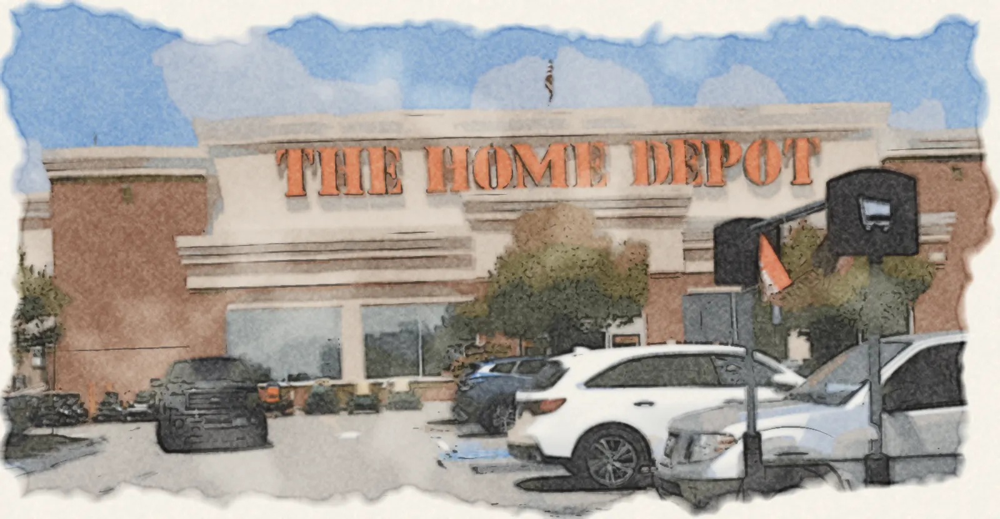
      <figcaption class="fig-cap"><span class="credit">Watercolor after a photograph of the Macon, Georgia store by Michael Rivera, CC BY 4.0</span></figcaption>
    </figure>
  </div>
  <div class="col">
    <div class="howto">
      <svg class="mini-tag" viewBox="0 0 54 40" aria-hidden="true"><rect x="1" y="1" width="52" height="38" rx="3" fill="none" stroke="currentColor" stroke-width="1.5"/><rect x="1" y="1" width="52" height="10" rx="2" fill="var(--apron)"/><rect x="8" y="18" width="30" height="3" fill="currentColor"/><rect x="8" y="25" width="22" height="3" fill="currentColor" opacity=".5"/></svg>
      <div>The episode has 19 chapters, so this page has 19 aisles. The bar at the top tracks where you are in the episode’s 3 hours and 35 minutes. Each aisle ends with a shelf tag holding one lesson; as you read, the tags drop into your cart, and they print on a receipt at checkout.</div>
    </div>
  </div>
</header>

<main>

<!-- 01 -->
<section class="aisle" id="aisle-1" data-ch="0">
  <div class="col">
    <div class="sign-wrap"><div class="wires"></div><div class="sign"><div class="num">01</div><div class="txt"><span class="aisle-l">Aisle</span><span class="ttl">Intro</span><span class="ts">00:00:43</span></div></div></div>
    <h2>The best stock nobody brags about</h2>
    <p class="lede">Ben and David open with a claim that sounds like trivia until you check it. From its IPO in September 1981 to today, Home Depot has been the single highest-returning equity in the American stock market. Put $1,000 in at the offering, reinvest the dividends, and you have about $17 million. The same $1,000 in the S&amp;P 500 became about $170,000. Home Depot went public a year after Apple, and on that same $1,000 bet it beats Apple too.</p>
    <p>The hosts say this was among the most requested episodes in the show’s history, with emails arriving every week for two or three years. Their question for the next three and a half hours: Home Depot is the only specialty retailer in the world that sits in the same universe as Costco, Walmart and Amazon. Why did this one company, selling lumber and lightbulbs, work so uniquely well?</p>
  </div>
  <div class="wide">
    <div class="fig" id="fig-compound">
      <p class="fig-h">What 45 years of compounding looks like</p>
      <p class="fig-sub">Drag through the years. Home Depot’s path is drawn at the constant rate that turns $1,000 into $17 million over 45 years (about 24% a year); the S&amp;P 500 at the rate that turns it into $170,000 (about 12%).</p>
      <div class="controls">
        <div class="seg" role="group" aria-label="Scale"><button type="button" data-scale="lin" aria-pressed="true">Dollars</button><button type="button" data-scale="log" aria-pressed="false">Log scale</button></div>
      </div>
      <div class="chart-wrap"><svg id="compound-svg" viewBox="0 0 960 400" role="img" aria-label="Growth of $1,000 from 1981 to 2026, Home Depot versus the S&P 500"></svg></div>
      <div class="slider-row"><label for="yr">1981</label><input id="yr" type="range" min="1981" max="2026" step="1" value="2026"><span>2026</span></div>
      <div class="readout">
        <div><div class="k">Year</div><div class="v" id="r-yr">2026</div></div>
        <div><div class="k">Home Depot</div><div class="v o" id="r-hd">$17.0M</div></div>
        <div><div class="k">S&amp;P 500</div><div class="v b" id="r-sp">$170K</div></div>
        <div><div class="k">Doublings so far</div><div class="v" id="r-dbl">14.1</div></div>
      </div>
      <p class="note">These are smoothed, constant-rate paths between the episode’s two endpoints, not the actual share price, which had flat stretches (the Nardelli years) and sharp runs. Switch to the log scale and steady compounding becomes a straight line; shaded bands mark each CEO’s tenure.</p>
    </div>
  </div>
  <div class="col">
    <aside class="tag" data-lesson="Compounding is boring in any one year" data-aisle="1">
      <div class="tag-top"><span class="l">Lesson 01</span><span class="r">Aisle 01 · 00:00:43</span></div>
      <div class="tag-main"><p class="tag-head">Compounding is boring in any one year.</p>
      <p class="tag-body">At about 24% a year, money doubles roughly every three years and two months. Fourteen doublings separate $1,000 from $17 million. No single year of it looks like much; the result comes from never stopping.</p></div>
      <div class="tag-foot"><span class="barcode"></span><span class="sku">SKU 1981-2026 · 24.2%/yr</span></div>
    </aside>
  </div>
</section>

<!-- 02 -->
<section class="aisle" id="aisle-2" data-ch="1">
  <div class="col">
    <div class="sign-wrap"><div class="wires"></div><div class="sign"><div class="num">02</div><div class="txt"><span class="aisle-l">Aisle</span><span class="ttl">Bernie Marcus’s early career &amp; meeting Arthur Blank</span><span class="ts">00:05:32 · 1972</span></div></div></div>
    <h2>A pharmacist from Newark</h2>
    <figure class="float-r plate" style="margin-top:6px">
      
      <figcaption><span>Bernie Marcus (1929–2024).</span><span class="credit">Ink &amp; watercolor after Rabbi Pinchas Taylor, CC BY 3.0</span></figcaption>
    </figure>
    <p>Bernie Marcus grew up poor in 1930s Newark, the son of Jewish immigrants from Russia, and was the first in his family to go to college. He wanted to be a doctor. Money pushed him to pharmacy instead, and pharmacy pushed him into retail, where he discovered he liked the store more than the counter. He rose through the New York discount chain Two Guys, and in 1972 the Los Angeles conglomerate Daylin made him CEO of its hardware subsidiary, a chain called Handy Dan.</p>
    <p>At Daylin he met Arthur Blank, a sharp numbers man with a background, like Bernie’s, in the drugstore business. Bernie made him his finance chief at Handy Dan. It was the start of a partnership that would run for almost three decades: Bernie the showman and salesman, Arthur the operator who knew where every dollar went.</p>
    <p class="has-mn"><span class="mn"><b>SKU</b>Stock-keeping unit: one distinct item a store carries. A 3-inch and a 4-inch brass hinge are two SKUs.</span>The idea came from a visit down the coast. Bernie went to see a retail friend in San Diego, a man named Sol Price, whose Price Club warehouse sold everything from tires to tuna in giant quantities at prices nobody could match. A Handy Dan store carried about 8,000 items. Price’s model suggested a hardware warehouse could carry 25,000, bought directly from manufacturers, at rock-bottom prices. As the episode puts it, the eventual business plan was “really pretty much exactly, just clone Price Club.”</p>
    <div class="clear"></div>
    <aside class="tag" data-lesson="The best ideas are often borrowed from the next aisle over" data-aisle="2">
      <div class="tag-top"><span class="l">Lesson 02</span><span class="r">Aisle 02 · 00:05:32</span></div>
      <div class="tag-main"><p class="tag-head">The best ideas are often borrowed from the next aisle over.</p>
      <p class="tag-body">Sam Walton said he stole more ideas from Sol Price than from anyone. So did Costco’s founders. Bernie’s move was to see that the warehouse model, proven on groceries and tires, had barely touched hardware, where selection and price mattered even more.</p></div>
      <div class="tag-foot"><span class="barcode"></span><span class="sku">8,000 SKUs → 25,000</span></div>
    </aside>
  </div>
</section>

<!-- 03 -->
<section class="aisle" id="aisle-3" data-ch="2">
  <div class="col">
    <div class="sign-wrap"><div class="wires"></div><div class="sign"><div class="num">03</div><div class="txt"><span class="aisle-l">Aisle</span><span class="ttl">Ken Langone &amp; Handy Dan</span><span class="ts">00:15:58 · 1970s</span></div></div></div>
    <h2>The banker who bought a stock at two times earnings</h2>
    <figure class="float-r plate photo" style="margin-top:6px">
      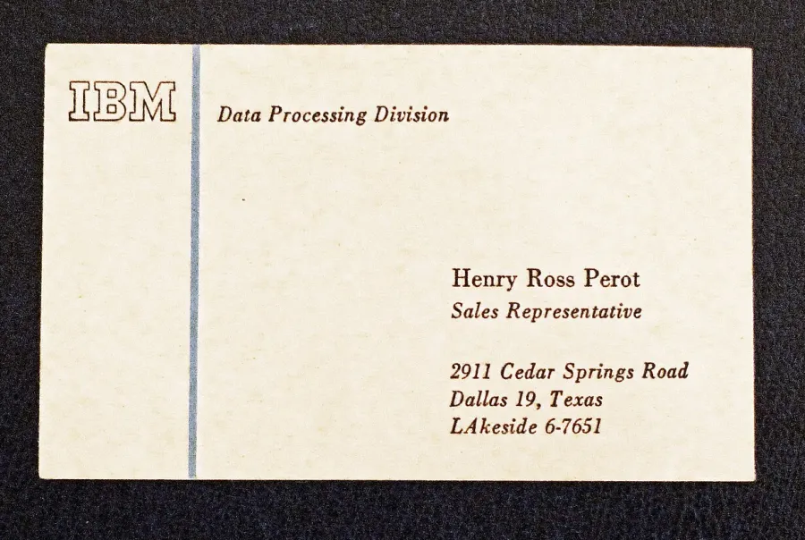
      <figcaption><span>Before he founded EDS in 1962, Perot sold computers for IBM.</span><span class="credit">Erik Charlton, CC BY 2.0</span></figcaption>
    </figure>
    <p>Ken Langone came from nothing, an Italian-American kid from Long Island who talked his way onto Wall Street. While he was still young he won the job of sole manager for the IPO of Ross Perot’s Electronic Data Systems in 1968, the deal that made his name, and his relationship with Perot.</p>
    <p class="has-mn"><span class="mn"><b>Two times earnings</b>Share price divided by profit per share. At 2×, a buyer pays two years of profit for the stock; the market usually pays 15 to 20.</span>Years later a CEO he trusted pointed him at Handy Dan: a well-run hardware chain trapped inside a parent company that was in trouble. Langone looked it up. The stock was trading around $3 while the company earned about $1.50 a share, a price of two times earnings. He flew to Los Angeles the next day and kept buying until he owned nearly 20% of the company. That is how he met the man running it, Bernie Marcus.</p>
    <div class="clear"></div>
  </div>
  <figure class="wide plate photo">
    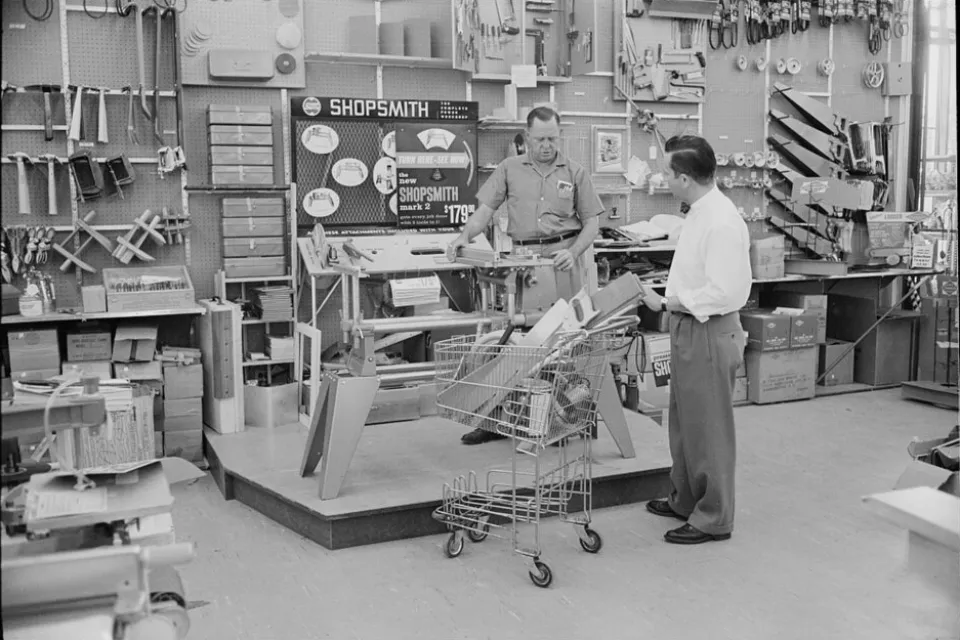
    <figcaption><span>The world before the warehouse: the tool aisle of a Hechinger lumber and hardware store in Washington, D.C. Hechinger was one of the regional chains Home Depot would outgrow and outlast.</span><span class="credit">Marion S. Trikosko, Library of Congress</span></figcaption>
  </figure>
  <div class="col">
    <aside class="tag" data-lesson="Back the operators, not the parent" data-aisle="3">
      <div class="tag-top"><span class="l">Lesson 03</span><span class="r">Aisle 03 · 00:15:58</span></div>
      <div class="tag-main"><p class="tag-head">Back the operators, not the parent.</p>
      <p class="tag-body">Handy Dan was cheap because its owner was struggling, not because the stores were. Langone bought the people a CEO had vouched for, at a price set by somebody else’s problems, and the people turned out to be the asset.</p></div>
      <div class="tag-foot"><span class="barcode"></span><span class="sku">$3 PRICE · $1.50 EPS</span></div>
    </aside>
  </div>
</section>

<!-- 04 -->
<section class="aisle" id="aisle-4" data-ch="3">
  <div class="col">
    <div class="sign-wrap"><div class="wires"></div><div class="sign"><div class="num">04</div><div class="txt"><span class="aisle-l">Aisle</span><span class="ttl">Ken buys Handy Dan, Bernie &amp; Arthur fired</span><span class="ts">00:33:08 · 1978</span></div></div></div>
    <h2>Kicked by a golden horseshoe</h2>
    <p>In early 1978, Langone did something he rarely did: he sold. The buyer was Sanford Sigoloff, the turnaround specialist running Daylin, a man whose reputation for slashing earned him the nickname “Ming the Merciless.” Sigoloff and Bernie did not get along. A few months later he fired Bernie, Arthur and their audit manager, officially over a fund an employee had set up to fight a union drive at stores in San Jose. Bernie always called the charge trumped up.</p>
    <p>Bernie was 48 and, by his own account, devastated. Langone saw it differently, and his line has become part of Home Depot legend: Bernie, he said, you have just been kicked in the ass with a golden horseshoe. Now go build the warehouse store you keep talking about.</p>
  </div>
  <div class="col">
    <div class="diptych narrow-left" style="margin-block:30px">
      <figure class="plate" style="margin:0">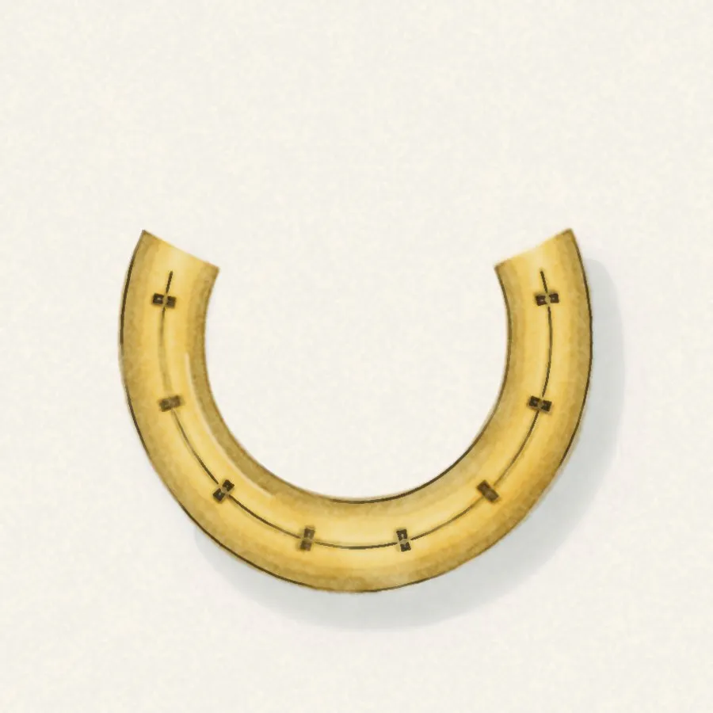</figure>
      <figure class="pq" style="margin:0">
        <blockquote>You have just been kicked in the ass with a golden horseshoe.</blockquote>
        <figcaption>Ken Langone to Bernie Marcus, 1978, as Marcus and Langone have long told it</figcaption>
      </figure>
    </div>
    <aside class="tag" data-lesson="A setback can remove the reason not to try" data-aisle="4">
      <div class="tag-top"><span class="l">Lesson 04</span><span class="r">Aisle 04 · 00:33:08</span></div>
      <div class="tag-main"><p class="tag-head">A setback can remove the reason not to try.</p>
      <p class="tag-body">The warehouse idea already existed. What it lacked was founders with nothing to lose. Langone answered the firing with a plan and an offer to raise the money, which turned a bad week into the most valuable startup in retail.</p></div>
      <div class="tag-foot"><span class="barcode"></span><span class="sku">FIRED APR 1978</span></div>
    </aside>
  </div>
</section>

<!-- 05 -->
<section class="aisle" id="aisle-5" data-ch="4">
  <div class="col">
    <div class="sign-wrap"><div class="wires"></div><div class="sign"><div class="num">05</div><div class="txt"><span class="aisle-l">Aisle</span><span class="ttl">Ross Perot almost buys Home Depot</span><span class="ts">00:43:55</span></div></div></div>
    <h2>The $223 billion Cadillac</h2>
    <p>Langone took the idea to the richest man he knew. Ross Perot agreed to put up $2 million for 70% of the new company. Then he started asking about the details, and one detail stuck: Bernie was driving an old company Cadillac. Perot’s executives drove Chevrolets. In Bernie’s telling, Perot put it simply: “My people don’t drive Cadillacs.”</p>
    <p>It was not really about the car. Bernie realized that with 70% of the company, Perot would be the boss of every decision, down to the parking lot. They walked away. Asked about it years later, Perot paused and said only, “Everybody has their own stories.” The hosts ran the back-of-envelope math on what that 70% would be worth now: about $223 billion.</p>
  </div>
  <div class="wide">
    <div class="diptych narrow-left" style="margin-block:30px;align-items:center">
      <figure class="plate" style="margin:0">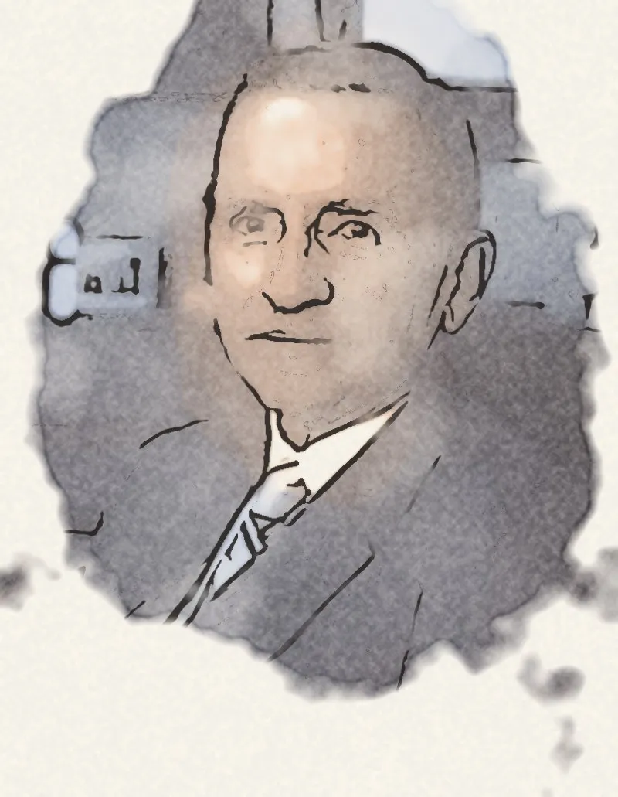<figcaption><span>Ross Perot in 1986.</span><span class="credit">Ink &amp; watercolor after Allan Warren, CC BY 3.0</span></figcaption></figure>
      <figure class="plate" style="margin:0">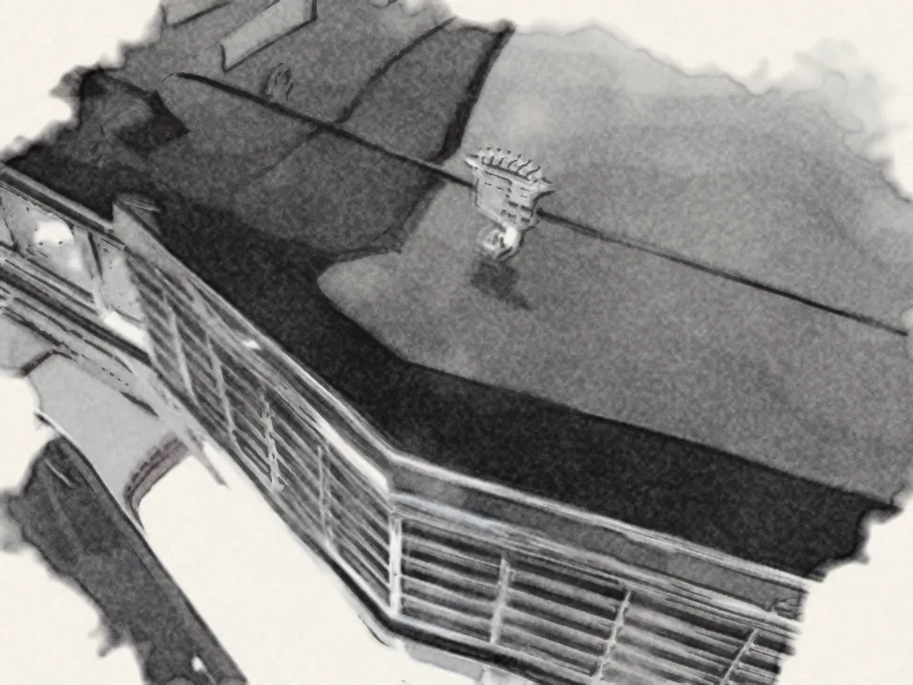<figcaption><span>The offending vehicle, more or less: a 1970s Cadillac Coupe DeVille.</span><span class="credit">Watercolor after That Hartford Guy, CC BY-SA 2.0</span></figcaption></figure>
    </div>
  </div>
  <div class="col">
    <div class="fig" id="fig-own">
      <p class="fig-h">Who would have owned Home Depot</p>
      <p class="fig-sub">Same $2 million either way. Toggle between Perot’s offer and the money Langone raised instead.</p>
      <div class="controls"><div class="seg" role="group" aria-label="Deal"><button type="button" data-deal="perot" aria-pressed="true">Perot’s offer</button><button type="button" data-deal="real" aria-pressed="false">What happened</button></div></div>
      <div class="two-up">
        <svg id="own-svg" viewBox="0 0 300 300" role="img" aria-label="Ownership split"></svg>
        <div id="own-legend"></div>
      </div>
      <p class="note">Accounts of Langone’s syndicate differ. One has about 40 investors putting in $50,000 each for half the company, with Langone keeping 5% and management 45%; another describes $25,000 units of preferred stock. The $223 billion figure is the hosts’ playful estimate, not a valuation.</p>
    </div>
    <aside class="tag" data-lesson="Control is part of the price" data-aisle="5">
      <div class="tag-top"><span class="l">Lesson 05</span><span class="r">Aisle 05 · 00:43:55</span></div>
      <div class="tag-main"><p class="tag-head">Control is part of the price.</p>
      <p class="tag-body">Perot’s money came with Perot. Seventy percent for $2 million was cheap capital and expensive control. The Cadillac was a preview of every argument to come, and Bernie read it correctly.</p></div>
      <div class="tag-foot"><span class="barcode"></span><span class="sku">$2M FOR 70% · DECLINED</span></div>
    </aside>
  </div>
</section>

<!-- 06 -->
<section class="aisle" id="aisle-6" data-ch="5">
  <div class="col">
    <div class="sign-wrap"><div class="wires"></div><div class="sign"><div class="num">06</div><div class="txt"><span class="aisle-l">Aisle</span><span class="ttl">Pat Farrah &amp; the HomeCo interlude</span><span class="ts">00:51:20</span></div></div></div>
    <h2>The fourth founder was going broke</h2>
    <p>With Perot gone, Bernie and Arthur went looking for proof that a home-improvement warehouse could work. They found it in Los Angeles, in a store called HomeCo, run by what the episode calls a wild man named Pat Farrah. HomeCo was everything they had imagined: huge, cheap, crammed with product, buzzing with customers. It was also insolvent, because Pat was not paying his suppliers.</p>
    <p>The merchandising was genius and the finances were a mess. Bernie and Arthur could fix the second part. When HomeCo went under, they brought Pat in as the merchant, the fourth founder. His partners compared him, without irony, to Michelangelo. One story has him needing to remove a wall, failing to get a permit, and driving a forklift through it, then calling it an accident. Farrah is alive and retired in his 80s, and keeps a low profile.</p>
  </div>
  <div class="wide">
    <div class="crew">
      <div class="crew-card"><div class="face"></div><span class="role">The vision</span><span class="nm">Bernie Marcus</span><span class="ds">CEO, salesman, the voice of the company and its culture until 1997.</span></div>
      <div class="crew-card"><div class="face"></div><span class="role">The controls</span><span class="nm">Arthur Blank</span><span class="ds">Finance and operations. Knew the numbers in every store. CEO from 1997.</span></div>
      <div class="crew-card"><div class="face">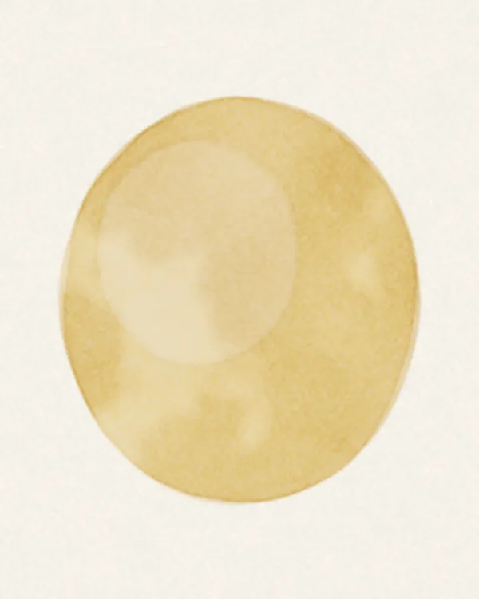<span class="ini">KL</span></div><span class="role">The capital</span><span class="nm">Ken Langone</span><span class="ds">Raised the seed money, ran the board’s Wall Street side, recruited later CEOs.</span></div>
      <div class="crew-card"><div class="face">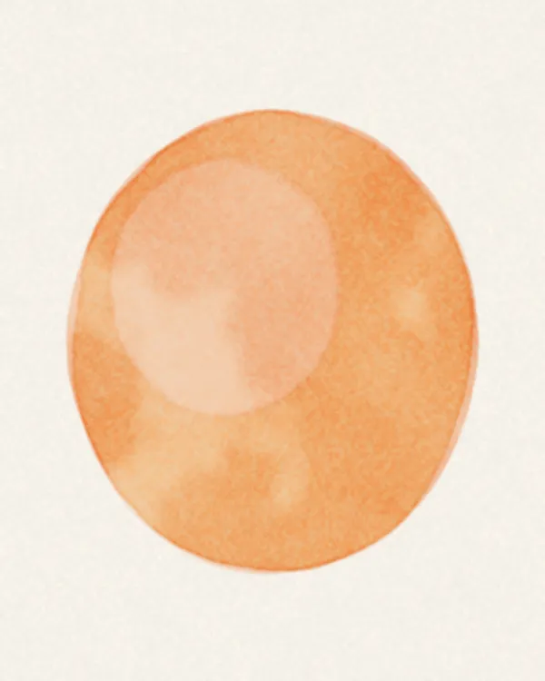<span class="ini">PF</span></div><span class="role">The merchandise</span><span class="nm">Pat Farrah</span><span class="ds">The merchant. Made a store feel full, cheap and alive.</span></div>
    </div>
  </div>
  <div class="col">
    <aside class="tag" data-lesson="Hire for the thing someone does best" data-aisle="6">
      <div class="tag-top"><span class="l">Lesson 06</span><span class="r">Aisle 06 · 00:51:20</span></div>
      <div class="tag-main"><p class="tag-head">Hire for the thing someone does best, and cover the rest.</p>
      <p class="tag-body">Pat Farrah had just run his own store into insolvency. Bernie and Arthur hired him anyway, for the one skill nobody did better, and let Arthur supply the discipline Pat lacked. Vision, money, merchandise and controls: four jobs, four people.</p></div>
      <div class="tag-foot"><span class="barcode"></span><span class="sku">FOUNDERS × 4</span></div>
    </aside>
  </div>
</section>

<!-- 07 -->
<section class="aisle" id="aisle-7" data-ch="6">
  <div class="col">
    <div class="sign-wrap"><div class="wires"></div><div class="sign"><div class="num">07</div><div class="txt"><span class="aisle-l">Aisle</span><span class="ttl">First stores &amp; early model</span><span class="ts">01:05:03 · 1979</span></div></div></div>
    <h2>Empty paint cans, ten feet high</h2>
    <p>First, a name. A marketing consultant pitched “Bad Bernie’s Build-All,” which went nowhere. The wife of one of Langone’s investors suggested “The Home Depot.” The consultant was not a total loss, the hosts note: he is the one who suggested the company adopt orange. It would stand out, and they could buy cheap canvas meant for circus tents and use it for signage.</p>
  </div>
  <figure class="wide plate">
    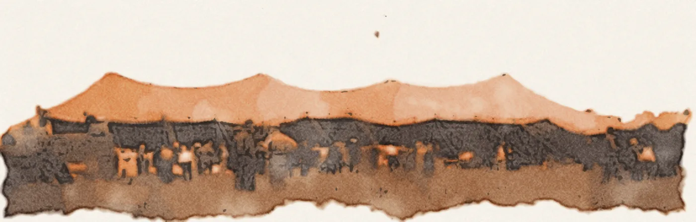
    <figcaption><span>Orange started as a cost decision: canvas meant for circus tents made cheap, loud signage.</span><span class="credit">Watercolor after a 1939 Ringling Bros. big-top photograph, public domain; recolored</span></figcaption>
  </figure>
  <div class="col">
    <p>On June 22, 1979, the first two Home Depots opened in Atlanta, in former Treasure Island discount stores that J.C. Penney sublet to them. The company had about $2 million, not nearly enough to fill a warehouse. So Pat filled it with illusion. Empty boxes went on the high shelves. Empty paint cans were stacked ten feet high to suggest bottomless inventory.</p>
    <p>The opening newspaper ad never ran as planned, so staff stood in the parking lots handing out $1 bills to lure people inside. Another legend has Pat on his knees at 4 a.m. polishing the floors before opening. The stores lost about $1 million in 1979 and made about $1 million in 1980.</p>
  </div>
  <div class="wide">
    <div class="diptych narrow-left" style="align-items:center">
      <div class="ledger" style="grid-template-columns:repeat(2,minmax(0,1fr));margin:0">
        <div><div class="n">2</div><div class="l">Stores on June 22, 1979</div></div>
        <div><div class="n">≈$2M</div><div class="l">Starting capital</div></div>
        <div><div class="n">$1</div><div class="l">Bills handed out to get people in the door</div></div>
        <div><div class="n">10 ft</div><div class="l">Height of the empty paint-can stacks</div></div>
        <div><div class="n" style="color:var(--bad)">−$1M</div><div class="l">1979 result</div></div>
        <div><div class="n" style="color:var(--good)">+$1M</div><div class="l">1980 result</div></div>
      </div>
      <figure class="plate" style="margin:0">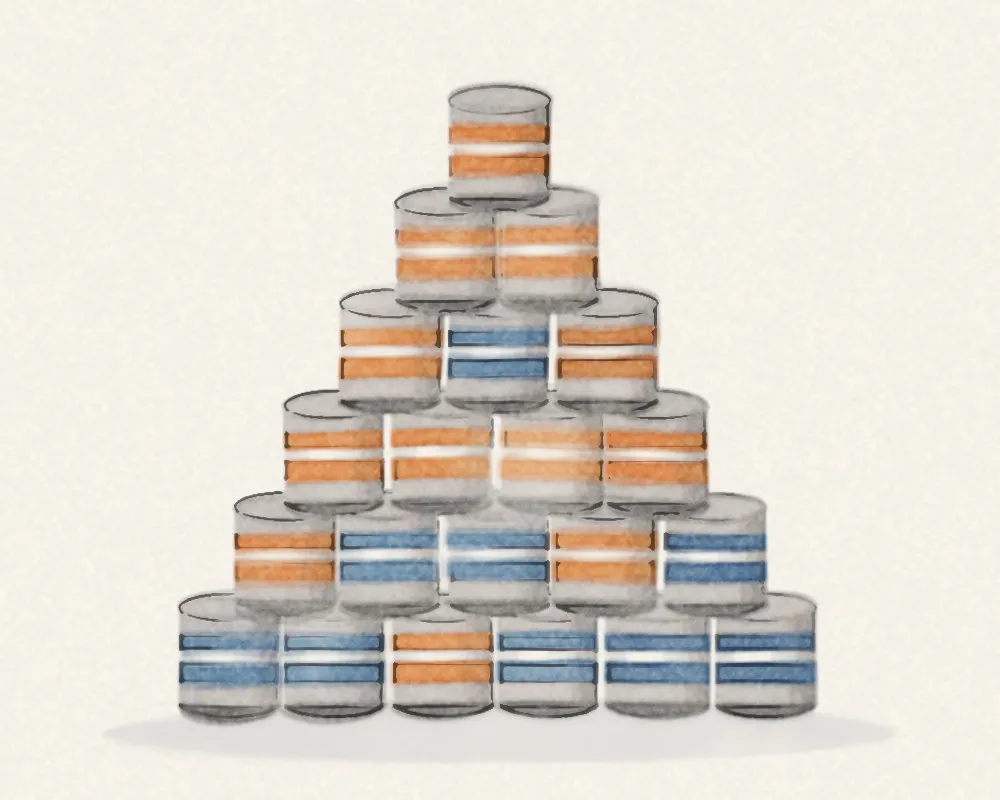<figcaption><span>Opening-day merchandising, Pat Farrah style.</span><span class="credit">Original watercolor for this page</span></figcaption></figure>
    </div>
  </div>
  <div class="col">
    <aside class="tag" data-lesson="Look abundant before you are" data-aisle="7">
      <div class="tag-top"><span class="l">Lesson 07</span><span class="r">Aisle 07 · 01:05:03</span></div>
      <div class="tag-main"><p class="tag-head">Look abundant before you are.</p>
      <p class="tag-body">A warehouse store sells the feeling of endless selection and rock-bottom price. On day one Home Depot had neither in full, so it staged both. The stacked cans were a promise the company then spent decades keeping.</p></div>
      <div class="tag-foot"><span class="barcode"></span><span class="sku">06.22.1979 · ATLANTA</span></div>
    </aside>
  </div>
</section>

<!-- 08 -->
<section class="aisle" id="aisle-8" data-ch="7">
  <div class="col">
    <div class="sign-wrap"><div class="wires"></div><div class="sign"><div class="num">08</div><div class="txt"><span class="aisle-l">Aisle</span><span class="ttl">Home Depot goes public &amp; expands</span><span class="ts">01:14:16 · 1981</span></div></div></div>
    <h2>From two stores to a billion dollars</h2>
    <p>Home Depot went public on September 22, 1981, at $12 a share, a market value of roughly $32 million. Then it started opening stores across the South. Sales passed $1 billion in 1986. By 1989 Home Depot had passed Lowe’s to become the largest home-improvement retailer in the country.</p>
    <p>The one real stumble came early. In 1984 the company bought nine Bowater Home Centers in Texas, Louisiana and Alabama for about $40 million. The stores, the staff and the habits did not fit. Earnings fell 42%, debt rose to about $200 million, and the stock dropped. It was the company’s first lesson in the limits of buying growth.</p>
  </div>
  <div class="wide">
    <div class="fig">
      <p class="fig-h">Net sales, the founders’ era</p>
      <p class="fig-sub">Fiscal years 1979–1997, in billions of dollars. Hover or tap a bar.</p>
      <div class="chart-wrap" id="rev-early"></div>
      <p class="note">Rounded from Home Depot annual reports. Early fiscal years ended in late January or early February of the following calendar year.</p>
    </div>
  </div>
  <div class="col">
    <aside class="tag" data-lesson="Buying stores is not buying a culture" data-aisle="8">
      <div class="tag-top"><span class="l">Lesson 08</span><span class="r">Aisle 08 · 01:14:16</span></div>
      <div class="tag-main"><p class="tag-head">Buying stores is not buying a culture.</p>
      <p class="tag-body">Bowater added nine stores in one stroke and produced Home Depot’s first big earnings drop. The things that made a Home Depot a Home Depot, the people and the way they treated customers, were not included in the purchase price.</p></div>
      <div class="tag-foot"><span class="barcode"></span><span class="sku">IPO $12 · 09.22.1981</span></div>
    </aside>
  </div>
</section>

<!-- 09 -->
<section class="aisle" id="aisle-9" data-ch="8">
  <div class="col">
    <div class="sign-wrap"><div class="wires"></div><div class="sign"><div class="num">09</div><div class="txt"><span class="aisle-l">Aisle</span><span class="ttl">Home Depot’s unique operating system</span><span class="ts">01:24:35</span></div></div></div>
    <h2>The format was easy to copy. The people were not.</h2>
    <p>The longest stretch of the episode is about how the stores actually worked, because that is where the hosts locate the advantage. The warehouse format was the visible innovation, and every competitor copied it within a few years. The operating system underneath it, as an analysis the episode cites argues, was the lasting edge. The format was copyable; the labor model was not.</p>
    <h3>Part one: margin you choose not to take</h3>
    <p class="has-mn"><span class="mn"><b>Gross margin</b>The share of each sale left after paying for the goods. Selling a $55 item for $100 is a 45% gross margin.</span>A traditional hardware store bought through distributors and marked goods up to something like a 45% gross margin. Home Depot bought direct and ran at about 30%, then gave the difference back to customers as lower prices. Bernie insisted on one price for everyone: “We were priced right for everyone, not just a select group.” Slide the margin below to see what that choice costs per item, and what it demands in volume.</p>
  </div>
  <div class="wide">
    <div class="fig" id="fig-margin">
      <p class="fig-h">The same item at two kinds of store</p>
      <p class="fig-sub">Assume the store pays $55 for an item. The traditional store keeps a 45% gross margin. Set the warehouse margin.</p>
      <div class="slider-row"><label for="mg">Warehouse margin</label><input id="mg" type="range" min="15" max="45" step="1" value="30"><span id="mg-v" class="tnum">30%</span></div>
      <div class="stack" id="stack"></div>
      <div class="readout">
        <div><div class="k">Shelf price</div><div class="v o" id="m-price">$78.57</div></div>
        <div><div class="k">Customer saves</div><div class="v" id="m-save">21%</div></div>
        <div><div class="k">Gross profit per item</div><div class="v" id="m-gp">$23.57</div></div>
        <div><div class="k">Volume to match the old store’s profit</div><div class="v" id="m-vol">1.9×</div></div>
      </div>
      <p class="note">Margins are the episode’s rough figures for the era; the $55 cost is illustrative. Gross profit here is before store operating costs, which a warehouse spreads across far more sales.</p>
    </div>
  </div>
  <div class="col">
    <p>That last number is the catch. At a 30% margin a warehouse needs nearly twice the unit volume to earn the same gross profit dollars as a traditional store. The low price is what brings the volume. And the volume is what makes the low price affordable, because bigger orders earn better terms from manufacturers and spread the fixed cost of a giant store across more sales. That loop is the flywheel.</p>
  </div>
  <div class="wide">
    <div class="fig" id="fig-fly">
      <p class="fig-h">The warehouse flywheel</p>
      <p class="fig-sub">Tap a step. Each one feeds the next.</p>
      <div class="two-up">
        <svg id="fly-svg" viewBox="0 0 400 400" role="img" aria-label="Flywheel diagram: lower prices, more customers, more volume, better costs, back to lower prices"></svg>
        <div class="fw-detail" id="fly-detail" aria-live="polite"></div>
      </div>
    </div>
  </div>
  <div class="col">
    <h3>Part two: plumbers in orange aprons</h3>
    <figure class="float-l plate" style="margin-top:6px">
      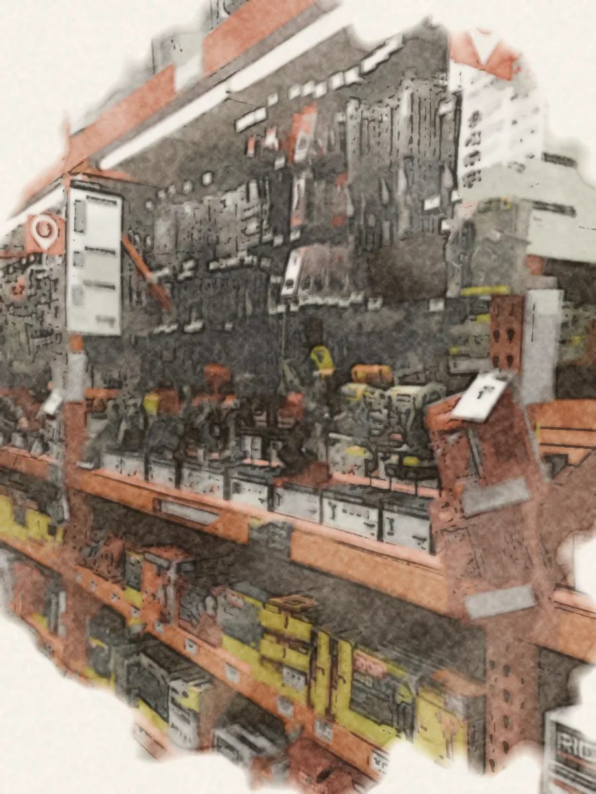
      <figcaption><span>The tool department.</span><span class="credit">Watercolor after Excel23, CC BY-SA 4.0</span></figcaption>
    </figure>
    <p>The second half of the system was the people in the aisles. Home Depot recruited former plumbers, electricians and carpenters, who traded the higher but unreliable pay of contracting for steady hours and work that was easier on the body. A customer with a leaking faucet could talk to someone who had fixed a thousand of them. The company ran how-to clinics in the stores to teach homeowners to do jobs themselves, which turned shoppers into repeat customers.</p>
    <p>The company’s favorite story is about a washer. A customer comes in to buy an expensive new faucet. The associate asks what is wrong with the old one, sells him a part that costs pennies, and shows him how to install it. The customer later comes back for a full kitchen remodel. Advice like that only works if the person giving it is not on commission, and Home Depot associates were not.</p>
    <div class="clear"></div>
    <h3>Part three: the CEO at the bottom</h3>
    <p>All of this was organized by a diagram the company still talks about: the inverted pyramid. The episode describes it this way. At the bottom is the CEO, “just this tiny little triangle. And at the top, the big thick level is customers. And then underneath customers is associates.” Everyone in management, including the CEO, exists to support the people in orange aprons.</p>
  </div>
  <div class="wide">
    <div class="fig" id="fig-pyr">
      <p class="fig-h">Which way up?</p>
      <p class="fig-sub">Home Depot’s org chart, and the conventional one it inverted.</p>
      <div class="two-up">
        <svg id="pyr-svg" class="pyr" viewBox="0 0 400 340" role="img" aria-label="Inverted pyramid: customers on top, then store associates, then managers and support staff, then the CEO at the bottom"></svg>
        <div>
          <p id="pyr-text" style="font-size:18px;margin:0 0 14px">Customers at the top, the associates who serve them next, and every layer of management beneath, down to the CEO. Authority flows up toward the people closest to the customer.</p>
          <button type="button" class="btn o" id="pyr-btn" aria-pressed="false">Show the conventional chart</button>
        </div>
      </div>
    </div>
  </div>
  <div class="col">
    <aside class="tag" data-lesson="Margin you don't take is a moat" data-aisle="9">
      <div class="tag-top"><span class="l">Lesson 09</span><span class="r">Aisle 09 · 01:24:35</span></div>
      <div class="tag-main"><p class="tag-head">Margin you don’t take is a moat.</p>
      <p class="tag-body">Every point of margin Home Depot left on the table became lower prices, which became volume, which became better costs. A competitor who wanted to match the price had to match the volume first.</p></div>
      <div class="tag-foot"><span class="barcode"></span><span class="sku">45% → 30% GROSS MARGIN</span></div>
    </aside>
    <aside class="tag" data-lesson="Sell the washer, not the faucet" data-aisle="9">
      <div class="tag-top"><span class="l">Lesson 10</span><span class="r">Aisle 09 · 01:24:35</span></div>
      <div class="tag-main"><p class="tag-head">Sell the washer, not the faucet.</p>
      <p class="tag-body">An associate who saves a customer money today earns the remodel later. Trust was the product behind the products, and it depended on two choices competitors found expensive to copy: hiring tradespeople and not paying them on commission.</p></div>
      <div class="tag-foot"><span class="barcode"></span><span class="sku">WASHER ≈ $0.50 · REMODEL</span></div>
    </aside>
  </div>
</section>

<!-- 10 -->
<section class="aisle" id="aisle-10" data-ch="9">
  <div class="col">
    <div class="sign-wrap"><div class="wires"></div><div class="sign"><div class="num">10</div><div class="txt"><span class="aisle-l">Aisle</span><span class="ttl">Arthur Blank takes CEO &amp; early cracks</span><span class="ts">01:46:01 · 1997</span></div></div></div>
    <h2>The startup that was now a $24 billion company</h2>
    <figure class="float-r plate" style="margin-top:6px">
      
      <figcaption><span>Arthur Blank.</span><span class="credit">Ink &amp; watercolor after Thomson200, CC0</span></figcaption>
    </figure>
    <p>In 1997, almost two decades after the founding, Bernie decided it was time to declare victory and handed the CEO title to Arthur. On paper everything was working. Sales were about $24 billion and the company was opening more than a hundred stores a year.</p>
    <p>Underneath, the hosts point to problems that would “come back to bite Home Depot pretty quickly.” The company still ran with the informality of a startup. The founders themselves have described hard partying and drinking in the stores after hours in the early years, a culture that was charming at 50 stores and harder to defend at 700. Store managers had enormous autonomy, which was great for service and bad for consistency. And Lowe’s had found a gap: brighter, tidier stores that made a point of courting women, who were making more and more of the decisions about home projects.</p>
    <p>Arthur stepped aside at the end of 2000. In 2002 he bought the Atlanta Falcons.</p>
    <div class="clear"></div>
    <aside class="tag" data-lesson="What works at 100 stores can crack at 1,000" data-aisle="10">
      <div class="tag-top"><span class="l">Lesson 11</span><span class="r">Aisle 10 · 01:46:01</span></div>
      <div class="tag-main"><p class="tag-head">What works at 100 stores can crack at 1,000.</p>
      <p class="tag-body">Informality was an asset when Bernie could walk every store. At a thousand stores it became inconsistency, and a competitor noticed which customers felt unwelcome and built stores for them.</p></div>
      <div class="tag-foot"><span class="barcode"></span><span class="sku">624 → 1,134 STORES</span></div>
    </aside>
  </div>
</section>

<!-- 11 -->
<section class="aisle" id="aisle-11" data-ch="10">
  <div class="col">
    <div class="sign-wrap"><div class="wires"></div><div class="sign"><div class="num">11</div><div class="txt"><span class="aisle-l">Aisle</span><span class="ttl">The Bob Nardelli era</span><span class="ts">01:56:07 · 2000–2007</span></div></div></div>
    <h2>A turbine man in a hardware store</h2>
    <p>In late 2000, Bob Nardelli lost the race to succeed Jack Welch at General Electric to Jeff Immelt. Ken Langone sat on GE’s board, and within days Nardelli was CEO of Home Depot. The episode calls him “the GE guy through and through,” and he ran the company like one.</p>
  </div>
  <div class="wide">
    <div class="diptych narrow-left" style="align-items:center">
      <figure class="plate" style="margin:0"><figcaption><span>Bob Nardelli in 2002.</span><span class="credit">Ink &amp; watercolor after a U.S. Dept. of Labor photo, public domain</span></figcaption></figure>
      <figure class="plate" style="margin:0">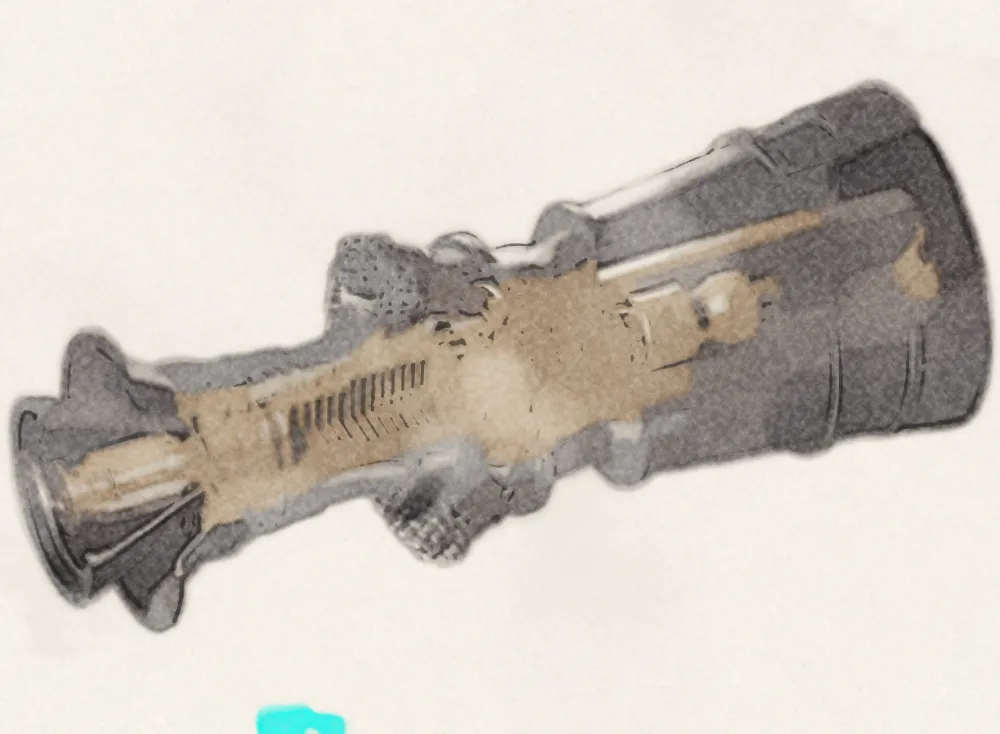<figcaption><span>Where Nardelli learned to manage: GE Power Systems, which builds machines like this one.</span><span class="credit">Watercolor after a U.S. Dept. of Energy photo, public domain</span></figcaption></figure>
    </div>
  </div>
  <div class="col" style="margin-top:30px">
    <p class="has-mn"><span class="mn"><b>Six Sigma</b>GE’s statistical method for cutting defects in manufacturing, aiming for fewer than 3.4 per million.</span>Nardelli brought Six Sigma, dashboards and centralization. He folded nine regional buying offices into one, centralized purchasing and replenishment, and measured everything. To cut payroll he replaced many experienced, full-time tradespeople with lower-paid part-timers; associates per store fell from about 200 to about 170 between 2000 and 2006. He also built a wholesale business, HD Supply, through a string of acquisitions.</p>
    <p>By the numbers he was a success. Revenue doubled. Store count nearly doubled. Earnings rose. But running a retailer, as the hosts put it, is not making turbines. Customers noticed that there was nobody in the aisles who could answer a question, and the stock went nowhere while Lowe’s more than doubled.</p>
  </div>
  <div class="wide">
    <div class="fig" id="fig-slope">
      <p class="fig-h">What doubled, and what didn’t</p>
      <p class="fig-sub">Fiscal 2000 to fiscal 2006, indexed to 100 at the start of Nardelli’s tenure.</p>
      <div class="chart-wrap"><svg id="slope-svg" viewBox="0 0 960 440" role="img" aria-label="Slope chart of Home Depot metrics from 2000 to 2006"></svg></div>
      <p class="note">Revenue $45.7B → $90.8B, including HD Supply. Stores 1,134 → 2,147. Associates per store and the Lowe’s share-price gain (+173%) are as cited in summaries of the episode. Home Depot shares were about $45 at the start of the period and about $40 at the end.</p>
    </div>
  </div>
  <div class="col">
    <aside class="tag" data-lesson="Efficiency can eat the product" data-aisle="11">
      <div class="tag-top"><span class="l">Lesson 12</span><span class="r">Aisle 11 · 01:56:07</span></div>
      <div class="tag-main"><p class="tag-head">Efficiency can eat the product.</p>
      <p class="tag-body">Every metric Nardelli tracked improved, while the thing customers came for, a knowledgeable person in an orange apron, got scarcer. The stock noticed before the dashboards did.</p></div>
      <div class="tag-foot"><span class="barcode"></span><span class="sku">200 → 170 ASSOCIATES/STORE</span></div>
    </aside>
  </div>
</section>

<!-- 12 -->
<section class="aisle" id="aisle-12" data-ch="11">
  <div class="col">
    <div class="sign-wrap"><div class="wires"></div><div class="sign"><div class="num">12</div><div class="txt"><span class="aisle-l">Aisle</span><span class="ttl">Nardelli’s public downfall &amp; firing</span><span class="ts">02:12:09 · 2006–2007</span></div></div></div>
    <h2>Thirty minutes in Wilmington</h2>
    <p>The end came in public. At the May 2006 annual meeting in Wilmington, Delaware, the board stayed away. Nardelli ran the meeting himself in about half an hour, with large timers limiting shareholder questions to a minute each. Shareholders were already angry about his pay, which the episode puts at roughly $200 million over six years, while the stock sat flat. The meeting turned simmering frustration into a national story about executive pay.</p>
    <p>Eight months later, on January 3, 2007, Nardelli was out. His exit package was widely reported at about $210 million.</p>
    <div class="ledger">
      <div><div class="n">≈30 min</div><div class="l">Length of the 2006 annual meeting</div></div>
      <div><div class="n">0</div><div class="l">Other directors who attended</div></div>
      <div><div class="n">1 min</div><div class="l">Time limit per shareholder question</div></div>
      <div><div class="n">≈$210M</div><div class="l">Reported exit package, January 2007</div></div>
    </div>
    <aside class="tag" data-lesson="Legitimacy is an asset on the balance sheet you can't see" data-aisle="12">
      <div class="tag-top"><span class="l">Lesson 13</span><span class="r">Aisle 12 · 02:12:09</span></div>
      <div class="tag-main"><p class="tag-head">Legitimacy is an asset you can’t see on the balance sheet.</p>
      <p class="tag-body">Six years of a flat stock did not end Nardelli’s tenure. A half-hour meeting that treated the owners as an inconvenience did. Leaders spend credibility the way companies spend cash, and it runs out faster.</p></div>
      <div class="tag-foot"><span class="barcode"></span><span class="sku">05.25.2006 · 01.03.2007</span></div>
    </aside>
  </div>
</section>

<!-- 13 -->
<section class="aisle" id="aisle-13" data-ch="12">
  <div class="col">
    <div class="sign-wrap"><div class="wires"></div><div class="sign"><div class="num">13</div><div class="txt"><span class="aisle-l">Aisle</span><span class="ttl">Frank Blake’s turnaround: crisis &amp; culture</span><span class="ts">02:24:24 · 2007</span></div></div></div>
    <h2>The quiet lawyer who stopped building stores</h2>
    <p>The board replaced Nardelli with Frank Blake, a lawyer who had worked at GE and served as deputy secretary of Energy before joining Home Depot in 2002. He took over in January 2007, just as the housing market began to collapse. The hosts frame him as the CEO who steered Home Depot through the Great Recession, and the one who mended its culture.</p>
    <p>He started by turning the pyramid right side up again, which is to say inverting it. He put money back into the people on the floor through bonuses and staffing. Every Sunday he wrote dozens of handwritten thank-you notes, most of them to store associates who had solved a customer’s problem, a habit he borrowed from George H. W. Bush. Blake liked to say that he did not rebuild the culture; it had always been there, waiting.</p>
  </div>
  <figure class="wide plate">
    
    <figcaption><span>Home Depot calls its Atlanta headquarters the Store Support Center, a name that follows from the inverted pyramid.</span><span class="credit">Watercolor after Eric W. Kennedy, CC BY-SA 3.0</span></figcaption>
  </figure>
  <div class="col">
    <p class="has-mn"><span class="mn"><b>Buyback</b>A company buys its own shares and retires them, so each remaining share owns a bigger slice of future profits.</span>Then he did the counterintuitive thing: he stopped growing. Blake sold HD Supply in 2007 for about $8.5 billion, down from an agreed $10.3 billion as credit markets seized. He effectively froze the store count and redirected the cash into the stores Home Depot already had, into its supply chain and into buying back shares. Over the following years the company repurchased roughly 30% of its stock, mostly at $30 to $50 a share.</p>
  </div>
  <div class="wide">
    <div class="fig">
      <p class="fig-h">Stores open at fiscal year-end</p>
      <p class="fig-sub">The Nardelli years added a store every two days. The Blake years added almost none.</p>
      <div class="chart-wrap" id="stores-chart"></div>
      <p class="note">From Home Depot annual reports.</p>
    </div>
  </div>
  <div class="col">
    <aside class="tag" data-lesson="In a crisis, invest in the front line" data-aisle="13">
      <div class="tag-top"><span class="l">Lesson 14</span><span class="r">Aisle 13 · 02:24:24</span></div>
      <div class="tag-main"><p class="tag-head">In a crisis, invest in the front line.</p>
      <p class="tag-body">Blake inherited a housing crash and a demoralized staff, and chose to spend on associates, not cut them. The handwritten notes cost nothing. The message they carried, that the people in the aisles mattered most, was the whole strategy.</p></div>
      <div class="tag-foot"><span class="barcode"></span><span class="sku">NOTES · EVERY SUNDAY</span></div>
    </aside>
    <aside class="tag" data-lesson="Stop growing to start compounding" data-aisle="13">
      <div class="tag-top"><span class="l">Lesson 15</span><span class="r">Aisle 13 · 02:24:24</span></div>
      <div class="tag-main"><p class="tag-head">Stop growing to start compounding.</p>
      <p class="tag-body">More stores had stopped meaning more value. Blake made the existing stores more productive and bought back about 30% of the company at low prices, so every remaining share owned more of a better business.</p></div>
      <div class="tag-foot"><span class="barcode"></span><span class="sku">HD SUPPLY SOLD $8.5B</span></div>
    </aside>
  </div>
</section>

<!-- 14 -->
<section class="aisle" id="aisle-14" data-ch="13">
  <div class="col">
    <div class="sign-wrap"><div class="wires"></div><div class="sign"><div class="num">14</div><div class="txt"><span class="aisle-l">Aisle</span><span class="ttl">E-commerce &amp; distribution revolution</span><span class="ts">02:42:30</span></div></div></div>
    <h2>Building the boring network</h2>
    <p class="has-mn"><span class="mn"><b>Rapid deployment center</b>A flow-through warehouse: goods arrive by the truckload and leave for stores, sorted, within a day or two.</span>Early Home Depot had no distribution centers at all. Vendors shipped straight to the stores, and store managers did their own ordering. That autonomy was part of the founders’ magic, and at 2,000 stores it was also chaos. Under Blake, the company built rapid deployment centers that receive goods in bulk and flow them out to stores within a day or two, centralizing replenishment for the first time. His successor Craig Menear pushed further with an $11 billion plan, announced in 2017, to connect stores, warehouses and the website.</p>
  </div>
  <div class="wide">
    <div class="diptych">
      <figure class="plate" style="margin:0">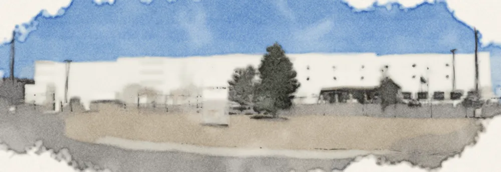<figcaption><span>A rapid deployment center in Lake Park, Georgia.</span><span class="credit">Watercolor after Michael Rivera, CC BY-SA 3.0</span></figcaption></figure>
      <figure class="plate" style="margin:0">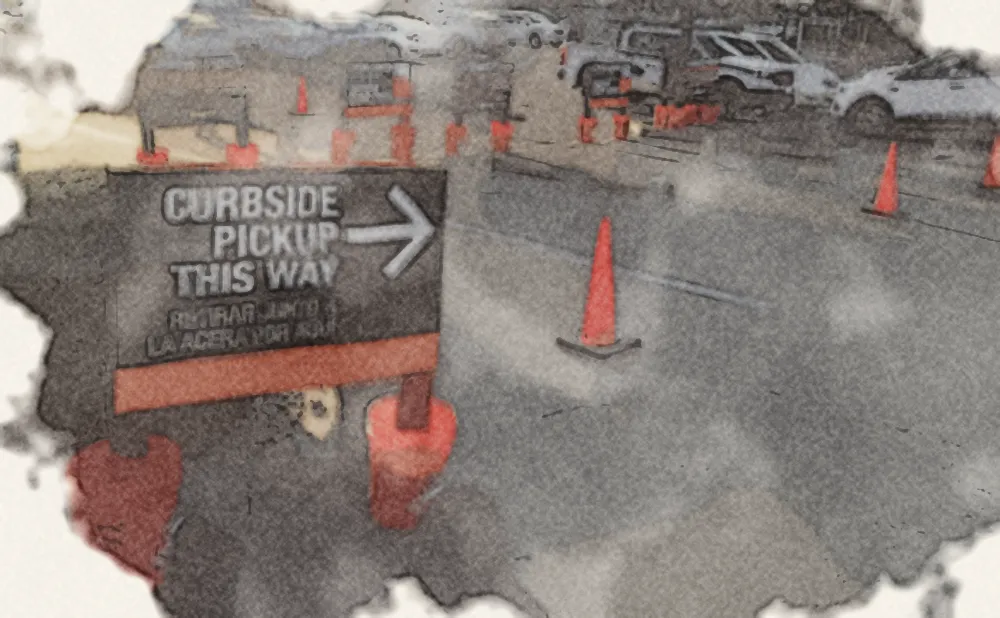<figcaption><span>Curbside pickup, Manteca, California, July 2020: the store as a warehouse with a front door.</span><span class="credit">Watercolor after TaurusEmerald, CC BY-SA 4.0</span></figcaption></figure>
    </div>
  </div>
  <div class="col" style="margin-top:30px">
    <figure class="float-r plate" style="margin-top:6px">
      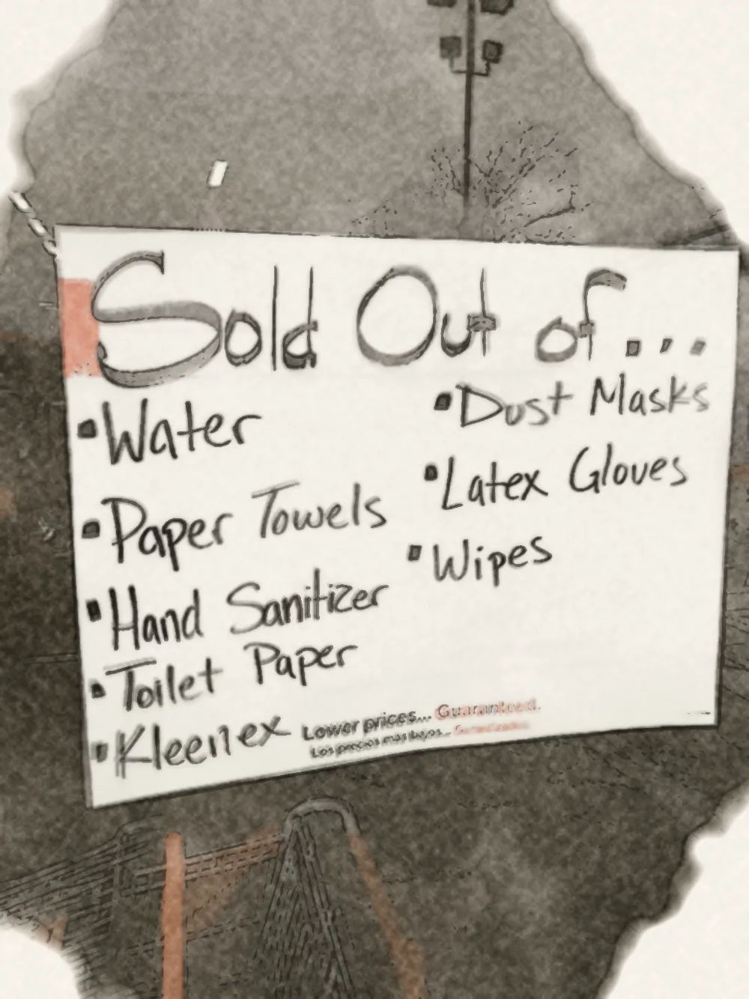
      <figcaption><span>March 2020, at a home-improvement store in Chicago.</span><span class="credit">Watercolor after Awkwafaba, CC BY-SA 4.0</span></figcaption>
    </figure>
    <p>Online sales are still only about 15% of the business, and a large share of online orders is picked up in a store. When the pandemic arrived and Americans spent their stimulus checks fixing up the houses they were stuck in, the network held. Sales went from about $110 billion in fiscal 2019 to about $151 billion in fiscal 2021. The hosts’ verdict on those distribution centers: Home Depot today “would be toast without them.”</p>
    <div class="clear"></div>
  </div>
  <div class="wide">
    <div class="fig">
      <p class="fig-h">Net sales, all 47 years</p>
      <p class="fig-sub">Highlighted: the pandemic surge the supply chain had to absorb. Hover or tap a bar.</p>
      <div class="chart-wrap" id="rev-all"></div>
      <p class="note">Fiscal 2007 onward excludes HD Supply, which was sold that year; that is the step down after 2006. Rounded from Home Depot annual reports.</p>
    </div>
  </div>
  <div class="col">
    <aside class="tag" data-lesson="Build the boring network before you need it" data-aisle="14">
      <div class="tag-top"><span class="l">Lesson 16</span><span class="r">Aisle 14 · 02:42:30</span></div>
      <div class="tag-main"><p class="tag-head">Build the boring network before you need it.</p>
      <p class="tag-body">Distribution centers looked like pure cost when Home Depot started building them. A decade later they were why a $110 billion retailer could absorb a $40 billion surge in demand without breaking.</p></div>
      <div class="tag-foot"><span class="barcode"></span><span class="sku">$110B → $151B · FY19–21</span></div>
    </aside>
  </div>
</section>

<!-- 15 -->
<section class="aisle" id="aisle-15" data-ch="14">
  <div class="col">
    <div class="sign-wrap"><div class="wires"></div><div class="sign"><div class="num">15</div><div class="txt"><span class="aisle-l">Aisle</span><span class="ttl">Home Depot today: Pro &amp; DIY</span><span class="ts">02:59:57 · 2024</span></div></div></div>
    <h2>The customer who shops every day</h2>
    <p>Home Depot today has about 2,350 stores and did $164.7 billion in sales in its most recent fiscal year. The big change in the last decade is who those sales go to. Roughly half now come from professionals: contractors, remodelers, roofers and property managers buying for the homeowners who hire them.</p>
    <div class="split" role="img" aria-label="Sales split: about half to pros, about half to do-it-yourself customers"><div class="pro" style="width:50%">Pro ≈ 50%</div><div class="diy" style="width:50%">DIY ≈ 50%</div></div>
    <p class="fig-cap"><span>Approximate share of sales by customer type, as described in the episode.</span></p>
  </div>
  <figure class="wide plate">
    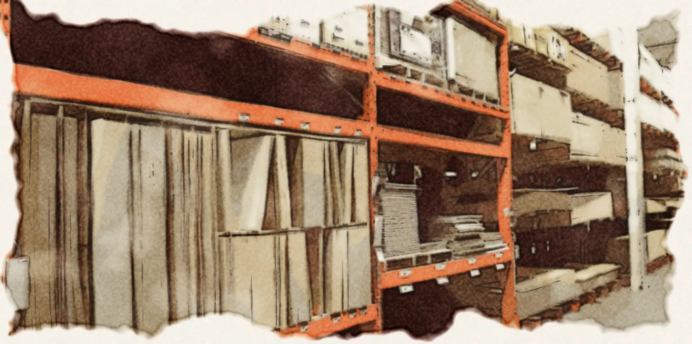
    <figcaption><span>Engineered lumber on the orange racking: the aisles pros come for, often before 7 a.m.</span><span class="credit">Watercolor after Raysonho, CC0</span></figcaption>
  </figure>
  <div class="col">
    <p>A homeowner might take on a couple of projects a year. A contractor buys every week, often every day. Under CEO Ted Decker, who took over in 2022, Home Depot made the largest acquisition in its history to chase that customer: SRS Distribution, a roofing, pool and landscape supplier, for $18.25 billion in 2024. In 2025 SRS bought GMS, a distributor of drywall, ceilings and steel framing, for about $5.5 billion. These are businesses that deliver to job sites, serving the pro jobs that never passed through a store.</p>
    <p>Along the way, Home Depot outlasted nearly everyone it ever competed with. Lowe’s is still standing, at roughly half the revenue. The rest are memories.</p>
  </div>
  <div class="wide">
    <div class="fig">
      <p class="fig-h">The competitors’ graveyard</p>
      <p class="fig-sub">Warehouse home-improvement chains that once fought Home Depot for the same customers.</p>
      <div class="grave">
        <figure>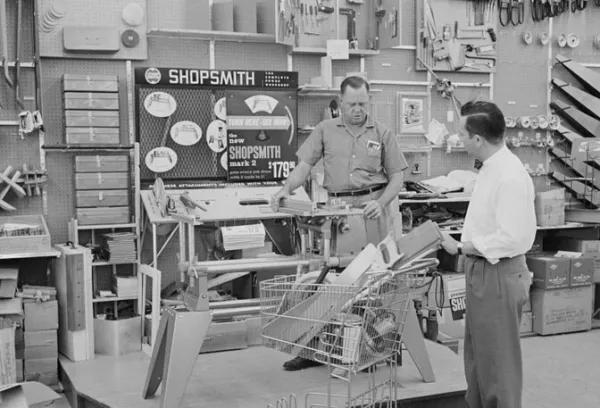<figcaption><b>Hechinger</b> · Washington-area pioneer, liquidated 1999</figcaption></figure>
        <figure>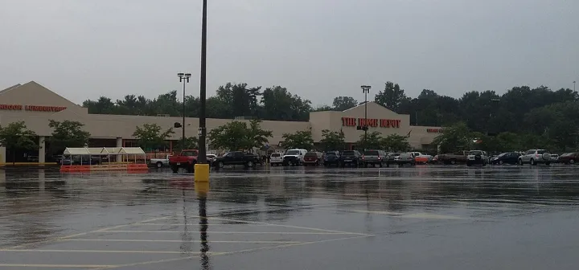<figcaption><b>Builders Square</b> · Kmart’s warehouse chain, closed by 1999. This former Builders Square in Fairlawn, Ohio, now wears a Home Depot sign.</figcaption></figure>
        <figure><div class="stone"><div><b>Also gone</b><span>HomeQuarters Warehouse · 1999</span><br><span>HomeBase · 2001</span><br><span>Payless Cashways · 2001</span><br><span>Builders Emporium · 1993</span></div></div><figcaption><b>The rest</b> · regional and national rivals that closed or liquidated</figcaption></figure>
      </div>
      <p class="note">Photographs via the Library of Congress and Wikimedia Commons; full credits at the end.</p>
    </div>
  </div>
  <div class="col">
    <aside class="tag" data-lesson="Follow the customer who buys every week" data-aisle="15">
      <div class="tag-top"><span class="l">Lesson 17</span><span class="r">Aisle 15 · 02:59:57</span></div>
      <div class="tag-main"><p class="tag-head">Follow the customer who buys every week.</p>
      <p class="tag-body">Frequency beats ticket size. The pro already supplied about half of Home Depot’s sales from inside its stores; SRS and GMS buy the delivery networks that serve the rest of the pro’s job, where the store was never part of it.</p></div>
      <div class="tag-foot"><span class="barcode"></span><span class="sku">SRS $18.25B · GMS $5.5B</span></div>
    </aside>
  </div>
</section>

<!-- 16 -->
<section class="aisle" id="aisle-16" data-ch="15">
  <div class="col">
    <div class="sign-wrap"><div class="wires"></div><div class="sign"><div class="num">16</div><div class="txt"><span class="aisle-l">Aisle</span><span class="ttl">Analysis: the paradox of specialness</span><span class="ts">03:12:04</span></div></div></div>
    <h2>Which quirks are the company?</h2>
    <p>The analysis opens with a tension running through the whole story. The things that made a company special when it was small often hold it back at scale. Some companies, like Costco, Rolex and Hermès, “fight gravity” and refuse to change what made them special. But scaling also changes what drives success, and sometimes the right move is to abandon the old habit. Early Home Depot had no distribution centers; today it would be toast without them.</p>
    <p>So which of Home Depot’s founding quirks were the product, and which were scaffolding? Make your call on each, then see what happened.</p>
  </div>
  <div class="wide">
    <div class="fig" id="fig-game">
      <p class="fig-h">Kept or changed?</p>
      <p class="fig-sub">Seven things that made early Home Depot special.</p>
      <div class="cards" id="cards"></div>
      <div class="score" id="score" aria-live="polite"></div>
    </div>
  </div>
  <div class="col">
    <aside class="tag" data-lesson="Know which quirks are the core" data-aisle="16">
      <div class="tag-top"><span class="l">Lesson 18</span><span class="r">Aisle 16 · 03:12:04</span></div>
      <div class="tag-main"><p class="tag-head">Know which quirks are the core.</p>
      <p class="tag-body">Specialness comes as a bundle. Part of it is the product; part is scaffolding you needed to get here. Nardelli cut the product, the people, and kept the scaffolding. Blake did the reverse.</p></div>
      <div class="tag-foot"><span class="barcode"></span><span class="sku">KEEP · CHANGE</span></div>
    </aside>
  </div>
</section>

<!-- 17 -->
<section class="aisle" id="aisle-17" data-ch="16">
  <div class="col">
    <div class="sign-wrap"><div class="wires"></div><div class="sign"><div class="num">17</div><div class="txt"><span class="aisle-l">Aisle</span><span class="ttl">7 Powers: competitive advantages</span><span class="ts">03:16:18</span></div></div></div>
    <h2>A moat made of size</h2>
    <p>Acquired runs every company through Hamilton Helmer’s <em>7 Powers</em>, which asks what lets a business earn persistently better returns than its nearest competitor. For Home Depot, Ben calls scale economies “the biggest one”: it can negotiate the lowest prices from suppliers and get the best manufacturers to make its house brands. Switching costs matter for pros who have built Home Depot into how they run their businesses, and store-brand tool batteries add a little lock-in. Branding counts mostly with pros and serious do-it-yourselfers.</p>
    <p>The twist: the profitability gap with Lowe’s, the episode notes, has seen “a very dramatic convergence over time.” Scale lowers costs. It does not guarantee a disciplined rival can’t earn similar margins.</p>
  </div>
  <div class="wide">
    <div class="fig">
      <p class="fig-h">Home Depot’s powers, as the episode weighs them</p>
      <p class="fig-sub">Filled bars show how much weight the hosts give each power.</p>
      <div class="powers" id="powers"></div>
      <p class="note">Dashed tiles are powers we found no argument for in the episode materials we could verify.</p>
    </div>
  </div>
  <div class="col">
    <aside class="tag" data-lesson="Scale is a power, not a guarantee" data-aisle="17">
      <div class="tag-top"><span class="l">Lesson 19</span><span class="r">Aisle 17 · 03:16:18</span></div>
      <div class="tag-main"><p class="tag-head">Scale is a power, not a guarantee.</p>
      <p class="tag-body">Being nearly twice Lowe’s size buys Home Depot better costs. It has not stopped Lowe’s margins from converging. A scale advantage keeps paying only while you keep passing it on to customers.</p></div>
      <div class="tag-foot"><span class="barcode"></span><span class="sku">SCALE · SWITCHING · BRAND</span></div>
    </aside>
  </div>
</section>

<!-- 18 -->
<section class="aisle" id="aisle-18" data-ch="17">
  <div class="col">
    <div class="sign-wrap"><div class="wires"></div><div class="sign"><div class="num">18</div><div class="txt"><span class="aisle-l">Aisle</span><span class="ttl">Quintessence: why it got so big</span><span class="ts">03:19:17</span></div></div></div>
    <h2>America’s houses keep getting older</h2>
    <p>The hosts call their answer a several-part equation, and the first part has nothing to do with Home Depot. It is the American house. From 1940 to 1980 the median age of the US housing stock held steady at about 23 years, because the country was building so fast. Then it started to climb: 25 years by 1990, 30 by 2000, and around 40 today. Every year, a huge, mostly owner-occupied, mostly wood-framed stock of houses gets a year older and needs more fixing.</p>
  </div>
  <div class="wide">
    <div class="diptych narrow-left" style="align-items:center">
      <figure class="plate" style="margin:0">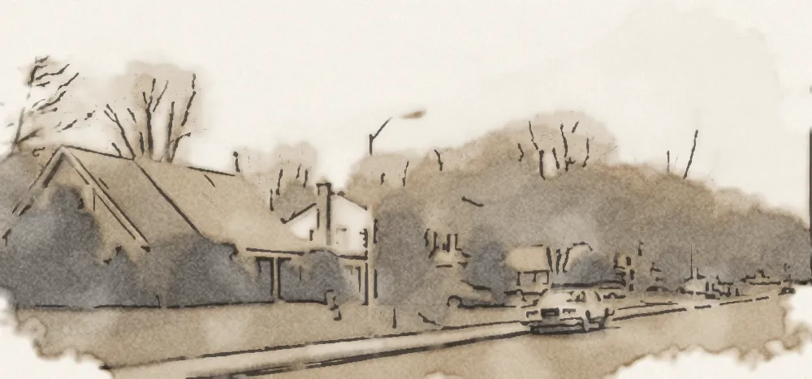<figcaption><span>A street of postwar houses in Bowie, Maryland, built by Levitt and Sons in the 1960s, now around sixty years old.</span><span class="credit">Watercolor after a HABS photograph, public domain</span></figcaption></figure>
      <div class="fig" style="margin:0">
        <p class="fig-h">Median age of US homes</p>
        <div class="chart-wrap" id="housing-chart"></div>
        <p class="note">1940–2000 figures as cited in the episode; “today” is the 2022 American Community Survey median for owner-occupied homes as analyzed by the National Association of Home Builders. Summaries of the episode quote figures from 40 to 42.</p>
      </div>
    </div>
  </div>
  <div class="col" style="margin-top:28px">
    <p>David points out that this is not universal. China’s housing market is larger than America’s, but it is a terrible market for home improvement: newer, denser, built differently and owned differently. Home Depot tried China and left. The American suburb is unusually good ground for this business.</p>
    <p>On top of that ground sit the parts this page has walked through. Tap each term.</p>
  </div>
  <div class="wide">
    <div class="fig" id="fig-eq">
      <div class="eq" id="eq" role="group" aria-label="Why it got so big"></div>
      <div class="eq-detail" id="eq-detail" aria-live="polite"></div>
    </div>
  </div>
  <div class="col">
    <aside class="tag" data-lesson="Pick a market that grows while you sleep" data-aisle="18">
      <div class="tag-top"><span class="l">Lesson 20</span><span class="r">Aisle 18 · 03:19:17</span></div>
      <div class="tag-main"><p class="tag-head">Pick a market that grows while you sleep.</p>
      <p class="tag-body">Every house in America gets a year older every year. Home Depot’s demand rides on the age of the housing stock, not just on new construction, which gives it a tailwind no competitor can take away and no recession fully stops.</p></div>
      <div class="tag-foot"><span class="barcode"></span><span class="sku">MEDIAN HOME 23 → ≈40 YRS</span></div>
    </aside>
  </div>
</section>

<!-- 19 -->
<section class="aisle checkout" id="aisle-19" data-ch="18">
  <div class="col" id="checkout">
    <div class="sign-wrap"><div class="wires"></div><div class="sign"><div class="num">19</div><div class="txt"><span class="aisle-l">Checkout</span><span class="ttl">Carve-outs + outro</span><span class="ts">03:26:27</span></div></div></div>
    <h2>Your receipt</h2>
    <p>The episode closes, as Acquired always does, with carve-outs: the hosts’ recommendations from outside the episode. For those, and for the full three and a half hours, <a href="https://www.acquired.fm/episodes/home-depot" target="_blank" rel="noopener">listen to the episode</a>. Here is everything you picked up on the way through. Lessons you scrolled past are checked; tap any line to go back to its aisle.</p>
  </div>
  <div class="receipt-wrap">
    <div class="receipt" id="receipt" aria-label="Receipt of lessons"></div>
  </div>
</section>

</main>

<footer class="sources">
  <div class="col">
    <h3>About this page</h3>
    <p>This is an independent, illustrated companion to Acquired’s Home Depot episode (Fall 2026, Episode 2, released September 14, 2026), not a transcript. It follows the episode’s 19 chapters and timestamps. Quotations attributed to the episode come from published transcript excerpts; the narration around them is ours, drawn from the episode’s chapter list, published summaries, and public records. Lesson framings on the shelf tags are our own synthesis. Where sources disagree on a figure, the page says so.</p>
    <h3>Sources</h3>
    <ol>
      <li>Acquired, <a href="https://www.acquired.fm/episodes/home-depot" target="_blank" rel="noopener">“The Home Depot”</a>, episode page, chapter list and transcript.</li>
      <li>Kyle Westaway, <a href="https://www.acquiredbriefing.com/p/home-depot" target="_blank" rel="noopener">Acquired Briefing: Home Depot</a>, September 24, 2026.</li>
      <li>Episode summaries: <a href="https://podcastrex.com/shows/acquired/home-depot" target="_blank" rel="noopener">Podcast Rex</a>, <a href="https://www.shortform.com/podcast/episode/acquired-2026-09-13-episode-summary-home-depot" target="_blank" rel="noopener">Shortform</a>, <a href="https://podscan.fm/podcasts/acquired/episodes/home-depot" target="_blank" rel="noopener">Podscan</a> (chapter times), <a href="https://podscripts.co/podcasts/acquired/home-depot" target="_blank" rel="noopener">Podscripts</a>.</li>
      <li>Bernie Marcus and Arthur Blank with Bob Andelman, <em>Built from Scratch</em> (1999), the source of the Perot and Cadillac story.</li>
      <li>Home Depot annual reports and investor releases: <a href="https://ir.homedepot.com/news-releases/2024/03-28-2024-100102814" target="_blank" rel="noopener">SRS Distribution (2024)</a>, <a href="https://ir.homedepot.com/news-releases/2025/09-04-2025-133535262" target="_blank" rel="noopener">GMS (2025)</a>; fiscal 2024 and 2025 results.</li>
      <li>Wikipedia entries for <a href="https://en.wikipedia.org/wiki/Daylin" target="_blank" rel="noopener">Daylin</a>, <a href="https://en.wikipedia.org/wiki/Handy_Dan" target="_blank" rel="noopener">Handy Dan</a>, <a href="https://en.wikipedia.org/wiki/Bob_Nardelli" target="_blank" rel="noopener">Bob Nardelli</a>, <a href="https://en.wikipedia.org/wiki/Frank_Blake_(businessman)" target="_blank" rel="noopener">Frank Blake</a>, <a href="https://en.wikipedia.org/wiki/HD_Supply" target="_blank" rel="noopener">HD Supply</a>, <a href="https://en.wikipedia.org/wiki/Pat_Farrah" target="_blank" rel="noopener">Pat Farrah</a>.</li>
      <li>Frank Blake on handwritten notes: <a href="https://tim.blog/2018/03/22/the-tim-ferriss-show-transcripts-frank-blake/" target="_blank" rel="noopener">The Tim Ferriss Show, episode 303</a>.</li>
      <li>Median home age: National Association of Home Builders analysis of the 2022 American Community Survey.</li>
    </ol>
    <h3>Illustrations and photographs</h3>
    <p>Watercolors were made for this page with an OpenCV pipeline (mean-shift simplification, pigment-density compositing, edge pooling, granulation, wet blooms, paper texture and pen contours) applied to the photographs below, or to simple drawn scenes for the horseshoe and paint cans. Adaptations of CC BY-SA images are shared under the same license.</p>
    <ul class="credits" id="credits"></ul>
    <p class="foot-note">Not affiliated with Acquired or The Home Depot. Figures are rounded; share-price paths in the first chart are smoothed illustrations, not price history.</p>
  </div>
</footer>

<script src="https://cdnjs.cloudflare.com/ajax/libs/d3/7.8.5/d3.min.js"></script>
<script src="credits.js"></script>
<script src="app.js"></script>
